第19章 真核细胞周期
译自 Molecular Cell Biology, 第8版 · Lodish et al. · The Eukaryotic Cell Cycle · 保留全部图表（点击图片可放大）
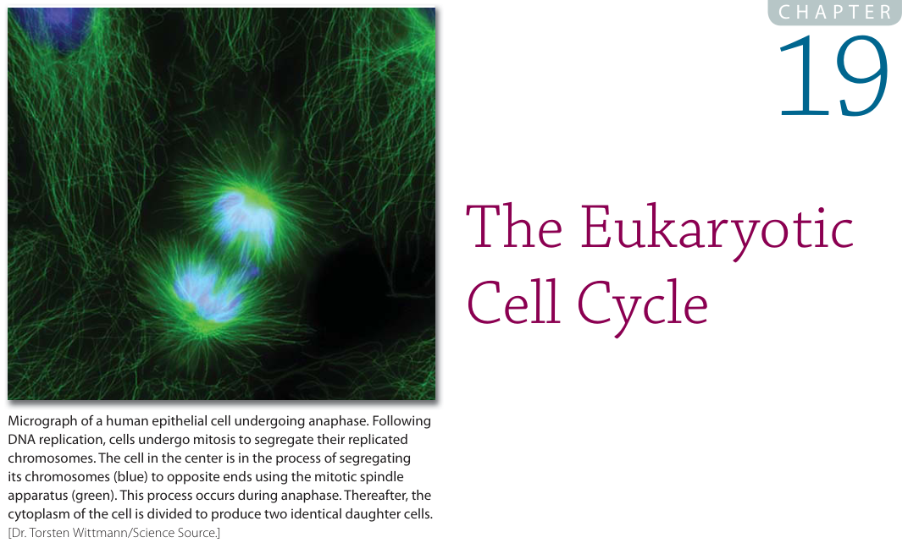
对细胞分裂的正确调控对所有生物都至关重要。在单细胞生物中，细胞分裂必须与细胞生长相平衡，从而恰当地维持细胞大小。若在亲本细胞达到合适大小之前就发生多次分裂，子细胞最终会变得太小而无法存活。若细胞在分裂之前长得过大，细胞功能就会异常，细胞数量的增加也会变得缓慢。在发育中的多细胞生物中，每个细胞的复制都必须被精确地调控和定时，以忠实且可重复地在每一个个体中完成发育程序。每一种组织中的每一类细胞都必须精确控制自身的复制，才能使脑或肾这类复杂器官正常发育。在正常成体中，细胞只在需要的时间和地点分裂。然而，对细胞复制的正常调控的丧失是癌的基本缺陷，这种再常见不过的疾病在发达国家每六人中就有一人因此死亡（见第24章）。
本章所讨论的调控真核细胞分裂的分子机制，已在很大程度上解释了癌细胞的复制调控如何发生异常。2001年，Leland Hartwell、Tim Hunt和Paul Nurse因最初阐明了所有真核生物中细胞分裂主调控因子的那批实验，恰如其分地获得了诺贝尔生理学或医学奖。
细胞周期一词指导致细胞分裂并产生两个子细胞的一系列有序事件，每个子细胞所含的染色体都与亲本细胞的染色体相同。细胞周期中发生两个主要的分子过程，其间有静止期相隔：在细胞周期的S期，每条亲本染色体被复制，形成两条相同的姐妹染色单体；而在有丝分裂（M期）中，由此产生的姐妹染色单体被分配到各个子细胞（图19-1；另见图1-16）。染色体复制及其向子细胞的分离必须在每次细胞分裂中按正确的顺序发生。若细胞在全部染色体复制完成之前就进行染色体分离，至少会有一个子细胞丢失遗传信息。同样，若在细胞分裂发生之前，染色体的某一区域又发生第二轮复制，则该区域所编码的基因数目会相对于其他基因不成比例地增加，这种现象常导致基因表达失衡，而这是无法与存活相容的。
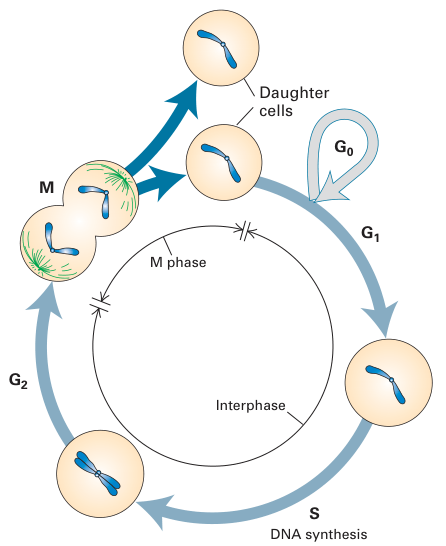
| DNA synthesis | DNA合成 |
| G1 | G1期 |
| G0 | G0期 |
| G2 | G2期 |
| S | S期 |
| M | M期 |
| M phase | M期 |
| Interphase | 分裂间期 |
| Daughter cells | 子细胞 |
要确保DNA复制正确进行、并确保每个子细胞继承正确数目的各条染色体，就需要高度的准确性和保真性。为此，细胞分裂受到称为检查点通路的监控机制的控制，这些机制会阻止细胞分裂中每一步的启动，直到它所依赖的较早步骤已经完成、且过程中出现的任何错误都已得到修正。使这些检查点通路的正常运作失活或改变的突变，会促成癌细胞的产生，因为它们导致染色体重排和染色体数目异常，进而引发更多突变和基因表达改变，造成细胞生长失控（见第24章）。
20世纪80年代后期，人们逐渐清楚，调控细胞周期中两个关键事件——染色体复制和染色体分离——的分子过程在所有真核细胞中基本相同。起初令许多研究者感到惊讶的是，像芽殖酵母与正在发育的人神经元这样差异巨大的细胞，竟使用几乎相同的蛋白质来调控自身分裂。然而，如同转录和蛋白质合成一样，细胞分裂的调控似乎是一个基本的细胞过程，它在真核生物进化的早期就已演化并基本达到最优化。由于这种相似性，对各种生物（每种都有其独特的实验优势）的研究共同促成了人们对细胞周期事件如何协调和控制的日益深入的理解。生物化学、遗传学、成像和显微操作技术都被用于研究真核细胞周期的各个方面。这些研究揭示，细胞分裂主要受进入细胞分裂周期的时机、DNA复制和有丝分裂的调控。
细胞周期的主控者是少数几种蛋白激酶，每一种都含有一个调节亚基（细胞周期蛋白）和一个催化亚基（细胞周期蛋白依赖性激酶，即CDK）。这些异二聚体激酶通过在特定的调控位点磷酸化多种参与进入细胞周期、DNA复制和有丝分裂的蛋白质，从而调控它们的活性——激活其中一些、抑制另一些，以协调它们的活动。蛋白质的可调控降解在重要的细胞周期转换中也起显著作用。由于蛋白质降解不可逆，它确保这些过程只沿一个方向在细胞周期中推进。
本章首先概述细胞周期，然后介绍对我们目前的认识有所贡献的各种实验体系。接着讨论细胞周期蛋白依赖性激酶（CDK）以及这些关键细胞周期调控因子受到调控的许多不同方式。随后我们更详细地考察各个细胞周期时相，重点说明CDK活性的调控如何支配各时相中发生的事件。之后讨论建立细胞周期顺序、并确保每个细胞周期时相准确发生的检查点通路。本章最后讨论减数分裂——一种产生单倍体生殖细胞（卵和精子）的特殊细胞分裂类型——以及使之区别于有丝分裂的分子机制。在讨论中，我们着重阐述支配细胞周期进程的一般原理并在讨论控制各细胞周期时相的因子时，采用跨物种通用的命名法。
19.1 细胞周期及其调控概述
真核生物的细胞周期是一系列高度保守、井然有序的事件。在每个周期中，DNA复制产生两个完全相同的DNA分子，它们被压缩并组织起来，以便分离进入子细胞。本节我们先回顾真核细胞周期的各个阶段，然后介绍主调控因子——细胞周期蛋白依赖性激酶，最后概述支配细胞周期的各项原理。
细胞周期是一系列导致细胞复制的有序事件
细胞周期分为四个主要时相（见图19-1）。进行周期循环（复制）的哺乳动物体细胞在G1（第一间隙）期增大体积，并合成DNA合成所需的RNA和蛋白质。当细胞达到合适大小并合成了所需的蛋白质后，它们便通过G1期中的一个点进入细胞周期，该点在酵母中称为START，在哺乳动物中称为限制点。一旦越过这个点，细胞便承诺进行细胞分裂。走向成功细胞分裂的第一步是进入S（合成）期，即细胞活跃复制其染色体的时期。在通过第二个间隙期——G2期之后，细胞开始有丝分裂这一复杂过程；有丝分裂也称为M（有丝分裂）期，分为若干阶段（图19-2）。
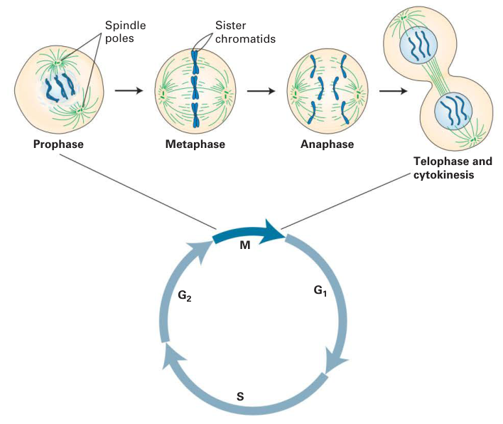
| Sister chromatids | 姐妹染色单体 |
| Spindle poles | 纺锤体极 |
| Prophase | 前期 |
| Metaphase | 中期 |
| Anaphase | 后期 |
| Telophase | 末期 |
| Cytokinesis | 胞质分裂 |
| G1 | G1期 |
| G2 | G2期 |
| S | S期 |
| M | M期 |
在讨论有丝分裂时，我们通常用染色体一词指那些在有丝分裂早期凝缩、并在光学显微镜下变得可见的复制后结构。因此，每条染色体由DNA复制产生的两个相同DNA分子，再加上组蛋白和其他染色体相关蛋白组成（见图8-35）。构成一条染色体的这两个相同DNA分子及与之结合的染色体蛋白称为姐妹染色单体。姐妹染色单体通过蛋白质交联彼此相连。
在分裂间期（即细胞周期中从一次M期结束到下一次M期开始之间的部分），外核膜与内质网相连。在前期有丝分裂开始时，高等真核生物的大多数细胞中核膜回缩进内质网，高尔基复合体的膜则解体成小泡。这是必需的，以便由中心体成核的微管能与染色体相互作用，形成有丝分裂纺锤体——它由一束橄榄球形的微管构成，两端各放射出一簇星状排列的微管，即纺锤体极。一种多蛋白复合体——动粒——在每个着丝粒处组装。核膜解体后，在中期，姐妹染色单体的动粒与来自相反纺锤体极的微管结合（见图18-37），染色体则在细胞中央的一个平面上排列成行。在后期，姐妹染色单体彼此分离。它们先被微管拉向纺锤体极，随后随着纺锤体极彼此远离而进一步分开（见图19-2）。
染色体分离一旦完成，有丝分裂纺锤体便解体，染色体在末期去凝缩。随着分离后的染色体去凝缩，核膜在其周围重新形成。细胞质发生的物理分裂称为胞质分裂，它产生两个子细胞。有丝分裂之后，进行周期循环的细胞进入G1期，开始新一轮周期。
所有真核生物的细胞周期时相推进顺序都相同，但完成一轮周期所需的时间在不同生物间差异很大。快速复制的人类细胞约24小时走完整个细胞周期：G1期9小时；S期10小时；G2期4.5小时；有丝分裂30分钟。相比之下，快速生长的酵母细胞整个周期只需90分钟。果蝇（Drosophila melanogaster）早期胚胎发育过程中发生的细胞分裂最快仅需8分钟即可完成！
在多细胞生物中，大多数分化细胞会退出细胞周期，存活数天、数周，在某些情况下（如神经细胞和眼晶状体细胞）甚至存活生物体的整个一生而不再分裂。这类有丝分裂后细胞通常在G1期退出细胞周期，进入称为G0的时期（见图19-1）。一些G0期细胞能重返细胞周期并恢复复制；这种重返受到调控，从而提供了对细胞增殖的控制。
细胞周期蛋白依赖性激酶控制真核细胞周期
如章首导言所述，细胞周期的推进由异二聚体蛋白激酶控制，这类激酶由一个催化亚基和一个调节亚基组成。催化亚基即细胞周期蛋白依赖性激酶（CDK），除非与调节性的细胞周期蛋白亚基结合，否则没有激酶活性。每种CDK只能与少数几种不同的细胞周期蛋白结合，而这些细胞周期蛋白决定复合体的底物特异性——即它磷酸化哪些蛋白质。每种细胞周期蛋白只在其所促进的细胞周期时相中存在并具有活性，因而把它所结合的CDK的激酶活性限制在该细胞周期时相内。细胞周期蛋白-CDK复合体通过在特定调控位点磷酸化参与细胞周期进程的数百种蛋白质，从而激活或抑制它们。因此，细胞周期的正常推进取决于在恰当的时间激活恰当的细胞周期蛋白-CDK复合体。正如我们将看到的，把细胞周期蛋白的表达限制在恰当的细胞周期时相，是细胞用来调控每个细胞周期蛋白-CDK异二聚体活性的众多机制之一。
支配细胞周期的若干关键原理
每次细胞分裂的目标是产生两个遗传组成完全相同的子细胞。为此，细胞周期事件必须按正确的顺序发生。DNA复制必须始终先于染色体分离。如今我们知道，促进细胞周期进程的关键蛋白质——CDK——的活性在细胞周期中发生波动。例如，促进S期的CDK在S期有活性，但在有丝分裂期间无活性。促进有丝分裂的CDK仅在有丝分裂期间有活性。CDK活性的这些振荡是真核细胞周期调控的一个基本方面，我们对这些振荡如何产生已有了一些了解。振荡由正反馈机制产生，即特定的CDK促进自身的激活。这些正反馈环与随后的负反馈机制相偶联，通过后者，CDK以间接的方式或带有内在延迟地促进自身的失活。它们的振荡不仅推动细胞周期前进，还在不同的细胞周期状态之间造成骤然转换，这对于形成彼此分明的细胞周期状态至关重要。
叠加在细胞周期振荡器机制之上的是由监控机制组成的系统，它进一步确保下一个细胞周期事件不会在前一个事件完成之前、或在前一步骤中出现的错误得到修正之前被激活。这些监控机制称为检查点通路，其职责是确保染色体复制和分离过程的准确性。确保染色体准确分离的系统效率极高，以至于每10^4–10^5次分裂中才会发生一次错误分离！细胞周期调控机制上的这些多层控制确保细胞周期稳健且无差错。
- 真核细胞周期分为四个时相：G1（有丝分裂与核DNA复制起始之间的时期）、S（核DNA复制时期）、G2（核DNA复制完成与有丝分裂之间的时期）和M（有丝分裂）。
- 细胞在G1期一个称为START或限制点的特定点承诺进行新的细胞分裂。
- 细胞周期蛋白-CDK复合体由调节性细胞周期蛋白亚基和催化性细胞周期蛋白依赖性激酶（CDK）亚基组成，驱动细胞在细胞周期中推进。
- 细胞周期蛋白激活CDK，且仅在其所促进的细胞周期时相中存在。
- CDK活性在细胞周期中发生振荡。正反馈环和负反馈环驱动这些振荡。
- 称为检查点通路的监控机制保证每个细胞周期步骤在下一步启动之前正确完成。
19.2 模式生物与研究细胞周期的方法
真核生物中调控细胞周期进程的分子机制的阐明异常迅速，这得益于遗传学与生物化学方法的强有力结合。本节中，我们讨论若干模式系统及其对揭示细胞分裂分子机制的贡献。用于研究细胞周期的最重要的三个系统是单细胞酵母——芽殖酵母（酿酒酵母）和裂殖酵母（粟酒裂殖酵母）——以及非洲爪蟾的卵母细胞和早期胚胎。我们还将讨论黑腹果蝇，它在研究细胞分裂与发育之间的相互作用方面被证明极为有效。对哺乳动物组织培养细胞的研究促成了对哺乳动物细胞周期调控的刻画。
在许多不同的实验系统中研究细胞周期，还带来了关于细胞周期总体调控的两项重要发现。第一，诸如DNA复制的起始和进入有丝分裂这类复杂的分子过程，都由少数几个主控细胞周期调控蛋白所调控和协调。第二，这些主控调控蛋白以及控制它们的蛋白高度保守，因此在真菌、海胆、昆虫、蛙类及其他物种中进行的细胞周期研究可直接适用于所有真核细胞，包括人类细胞。
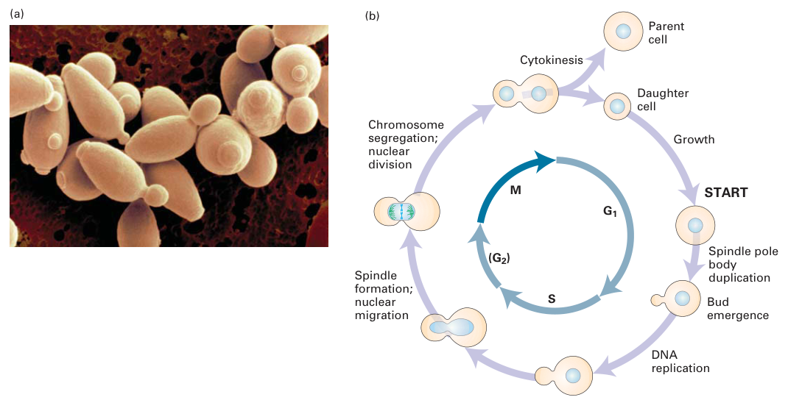
| Spindle pole body duplication | 纺锤体极体复制 |
| Bud emergence | 芽体出现 |
| DNA replication | DNA复制 |
| Spindle formation | 纺锤体形成 |
| Nuclear migration | 核迁移 |
| Chromosome segregation | 染色体分离 |
| Nuclear division | 核分裂 |
| Growth | 生长 |
| Cytokinesis | 胞质分裂 |
| Parent cell | 亲本细胞 |
| Daughter cell | 子细胞 |
| G1 | G1期 |
| S | S期 |
| G2 | G2期 |
芽殖酵母与裂殖酵母是细胞周期遗传分析的强有力系统
芽殖酵母和裂殖酵母已被证明是研究细胞周期的宝贵系统。尽管二者都属于真菌界，但它们的亲缘关系很远。这两种生物都能以单倍体状态存在，只携带每条染色体的一个拷贝。这些酵母能以单倍体细胞存在这一事实，使它们成为强有力的遗传学系统。在单倍体中很容易产生使基因失活的突变，因为每个基因只有一个拷贝（若是二倍体，则需要在基因的两个拷贝中各产生一个失活突变，才能使其活性丧失功能）。单倍体酵母可方便地用于筛选或选择具有特定缺陷（如细胞增殖缺陷）的突变体。这两个系统的其他优势在于：相对容易地操控单个基因的表达，以及容易培养和操控酵母，使细胞培养物以同步的方式推进细胞周期。
芽殖酵母细胞呈卵圆形，通过出芽进行分裂（图19-3a）。芽体即未来的子细胞，它与DNA复制的起始同时开始形成，并在整个细胞周期中持续生长（图19-3b）。因此，细胞周期阶段可由芽体的大小推断，这使酿酒酵母成为鉴定在细胞周期特定步骤被阻断的突变体的有用系统。事实上，正是在这种生物中，Lee Hartwell及其同事首先鉴定出了在推进特定细胞周期阶段方面存在缺陷的突变体。与哺乳动物细胞一样，芽殖酵母的细胞周期具有很长的G1期，对芽殖酵母细胞周期的研究塑造了我们对G1–S期转换如何受控的理解。
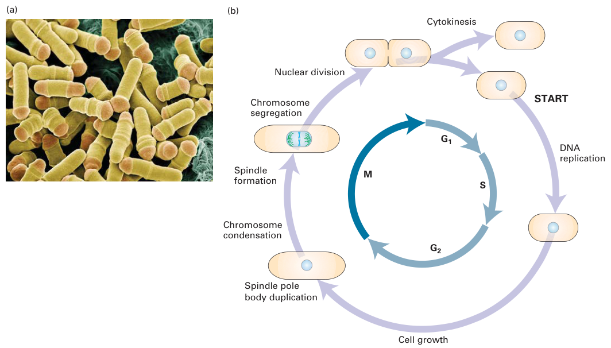
| Spindle pole body duplication | 纺锤体极体复制 |
| Chromosome condensation | 染色体凝缩 |
| Spindle formation | 纺锤体形成 |
| Chromosome segregation | 染色体分离 |
| Nuclear division | 核分裂 |
| Cytokinesis | 胞质分裂 |
| DNA replication | DNA复制 |
| Cell growth | 细胞生长 |
| G1 | G1期 |
| S | S期 |
| G2 | G2期 |
裂殖酵母细胞呈杆状，完全靠两端伸长来生长（图19-4a）。有丝分裂完成后，胞质分裂通过形成隔膜而发生（图19-4b）。裂殖酵母与后生动物细胞中调控G2期和进入有丝分裂的分子机制非常相似，对该生物的研究揭示了围绕G2–M期转换的分子事件。
芽殖酵母和裂殖酵母都可用于分离在细胞周期特定步骤被阻断、或表现出细胞周期调控异常的突变体。由于细胞周期推进对生存能力至关重要，科学家们分离出条件突变体，其基因编码的蛋白质在某一温度下有功能，而在另一个往往更高的温度下则失活（例如，在非许可温度下蛋白质错误折叠；见图6-6）。通过显微镜检查，停滞在特定细胞周期阶段的突变体很容易与正常分裂的细胞区分开。因此，在这两种酵母中，人们很容易分离出温度敏感突变导致推进细胞周期所需特定蛋白质缺陷的细胞。这类细胞称为cdc（细胞分裂周期）突变体。在这些温度敏感酵母菌株中被突变的基因的鉴定，提供了一份对细胞分裂几乎所有方面都至关重要的基因的全面清单。
蛙卵母细胞与早期胚胎便于对细胞周期机器进行生化刻画
生化研究需要从大量细胞中制备细胞提取物。对于细胞周期的生化研究而言，两栖动物和海洋无脊椎动物的卵及早期胚胎特别合适。这些生物通常具有大型的卵，受精之后会经历多个同步的细胞周期。通过从雌性个体中分离大量卵，并通过加入精子使它们同时受精（或以模拟受精的方式处理它们），研究人员可以获得处于细胞周期特定时间点的细胞提取物，用以分析蛋白质和酶活性。
为了理解如何利用非洲爪蟾的卵母细胞和卵来分析细胞周期推进，我们必须先阐明卵母细胞成熟的各个事件，这一过程可在体外重演。到目前为止，我们讨论的都是有丝分裂。然而，卵母细胞进行的是减数分裂（减数分裂的概览见图19-35）。当卵母细胞在蛙卵巢中发育时，它们复制DNA并在G2期停滞8个月，在此期间体积增大至直径1 mm，并储备早期胚胎进行多次细胞分裂所需的所有材料。当受到雄性刺激时，成年雌蛙的卵巢细胞分泌类固醇激素孕酮，孕酮诱导停滞在G2期的卵母细胞成熟并进入减数分裂。我们将在19.8节看到，减数分裂由两个连续的染色体分离阶段组成，称为减数分裂I和减数分裂II。孕酮触发卵母细胞进行减数分裂I并推进到第二次减数分裂中期，在那里停滞并等待受精（图19-5）。在此阶段，细胞被称为卵。当被精子受精时，卵核从其中期II停滞中释放出来并完成减数分裂。由此产生的单倍体卵核随后与单倍体精核融合，产生二倍体受精卵核。随后进行DNA复制，胚胎发生的第一次有丝分裂开始。由此产生的胚胎细胞接着经历另外11个快速、同步的细胞周期，形成一个中空的细胞球，称为囊胚。此后细胞分裂减慢，随后的分裂不同步，囊胚中不同位置的细胞在不同时间分裂。
利用非洲爪蟾研究参与有丝分裂的因子的优势在于，可以制备大量卵母细胞和卵，它们都在同步地经历孕酮处理和受精之后发生的细胞周期事件。这使得有可能从都处于细胞周期同一位点的细胞中制备足够量的提取物用于生化实验。正是在这一系统中，人们首次发现了触发有丝分裂的细胞周期蛋白-CDK复合物及其活性的振荡性质。这种活性被称为成熟促进因子（MPF），因为当注射到G2期停滞的卵母细胞中时，它能诱导进入减数分裂和卵母细胞成熟。
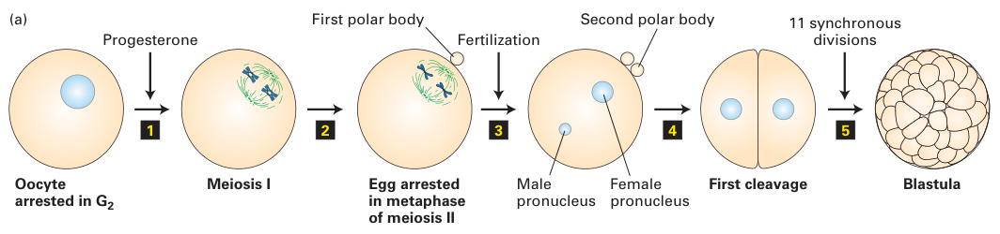
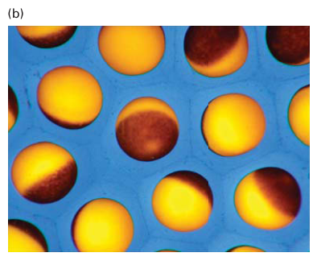
| Oocyte arrested in G2 | 停滞在G2期的卵母细胞 |
| Meiosis I | 减数分裂I |
| Egg arrested in metaphase of meiosis II | 停滞在减数分裂II中期的卵 |
| First cleavage | 第一次卵裂 |
| Blastula | 囊胚 |
| Progesterone | 孕酮 |
| Fertilization | 受精 |
| 11 synchronous divisions | 11次同步分裂 |
| Male pronucleus | 雄原核 |
| Female pronucleus | 雌原核 |
| First polar body | 第一极体 |
| Second polar body | 第二极体 |
果蝇揭示了发育与细胞周期之间的相互作用
复杂组织的发育往往需要对细胞周期进行特定的修改。因此，如果我们想理解复杂生物是如何构建的，理解发育与细胞分裂之间的相互作用就至关重要。黑腹果蝇已成为研究发育与细胞周期之间相互作用的首要模式系统。这种生物的发育不仅涉及若干高度异常的细胞周期，而且可应用于果蝇的强大遗传学技术促进了对参与细胞周期发育调控的基因的发现。
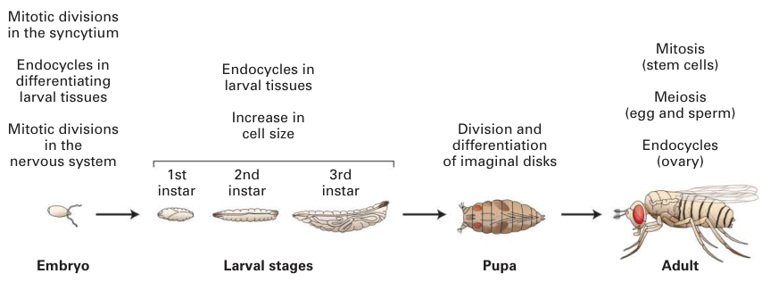
| Adult | 成体 |
| Embryo | 胚胎 |
| Larval stages | 幼虫阶段 |
| Pupa | 蛹 |
| Mitotic divisions in the syncytium | 合胞体中的有丝分裂 |
| Endocycles in differentiating larval tissues | 分化中的幼虫组织中的核内周期 |
| Mitotic divisions in the nervous system | 神经系统中的有丝分裂 |
| Division and differentiation of imaginal disks | 成虫盘的分裂与分化 |
| Increase in cell size | 细胞体积增加 |
| Mitosis (stem cells) | 有丝分裂（干细胞） |
| Meiosis (egg and sperm) | 减数分裂（卵和精子） |
| Endocycles (ovary) | 核内周期（卵巢） |
| 1st instar | 一龄幼虫 |
| 2nd instar | 二龄幼虫 |
| 3rd instar | 三龄幼虫 |
受精的果蝇胚胎的最初13次核分裂是DNA复制与有丝分裂的快速循环（没有间隙期），由卵成熟时在卵细胞质中储备的关键细胞周期调控因子驱动。这些分裂都发生在共同的细胞质中，称为合胞体分裂，并且同步发生（图19-6）。随着母源储备耗尽，间隙期被引入，先是G2期，随后是G1期。胚胎中的大多数细胞在此时停止分裂，形成质膜，并经历一种称为核内周期的特殊细胞周期。在核内周期中，细胞复制其DNA但不进行有丝分裂。这种复制导致基因剂量增加，并推动大分子生物合成增加，从而使单个细胞体积增大。因此，胚胎——此时已发育成爬行的幼虫——仅仅通过细胞体积的增大而生长，而不是通过细胞增殖。少数选定的细胞并非如此。这些细胞位于成虫盘中，成虫盘是在变态过程中将产生成体果蝇组织的器官。变态发生在蛹期，将幼虫转变为成体果蝇。产生成体果蝇的分裂是典型的细胞周期，最终形成二倍体生物。
组织培养细胞的研究揭示了哺乳动物的细胞周期调控
人类细胞中的细胞周期调控比其他非哺乳动物系统更为复杂。为了理解这种更高的复杂性，并理解作为癌症起因的细胞周期改变，不仅在模式生物中、也在人类细胞中研究细胞周期非常重要。研究人员使用在塑料培养皿中生长的正常细胞或肿瘤细胞来研究人类细胞周期的特性，这种方法称为组织培养或细胞培养。然而，重要的是要注意，用于研究人类细胞周期的许多细胞类型，其细胞周期特性已经改变，原因是在培养过程中发生了遗传改变，或者因为它们是从人类肿瘤中分离出来的。此外，体外培养条件与生物体内的条件并不相似，可能导致细胞行为改变。尽管哺乳动物细胞分裂的某些方面——如组织结构和调控细胞周期控制的发育信号——无法在细胞培养条件下重演，但细胞培养系统仍为理解哺乳动物细胞调控细胞分裂的内在机制提供了关键见解。研究人员还在努力建立更接近组织中细胞结构的培养系统。例如，目前正在开发聚合物网格，使科学家能够在模拟组织内细胞组织的三维培养中生长细胞。
原代人类细胞和其他哺乳动物细胞在体外培养时寿命有限。例如，正常人类细胞分裂25–50次，此后增殖减慢并最终停止。这一过程称为复制性衰老。有些细胞能够逃避这一过程并永生化，使研究人员得以建立细胞系。尽管这些细胞系携带影响其增殖某些方面的遗传改变，但它们仍是研究人类细胞周期推进的有用工具。这些细胞系可提供取之不尽的细胞来源，正如我们接下来将看到的，它们可被操控以同步的方式推进细胞周期，从而能够分析细胞周期不同阶段的蛋白质水平和酶活性。
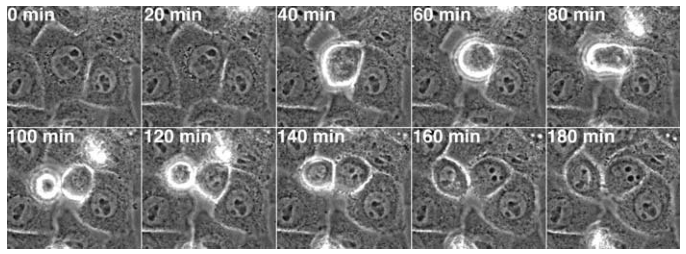
研究人员使用多种工具研究细胞周期
对细胞周期特性进行实验分析，要求我们能够确定单个细胞的细胞周期阶段。光学显微镜可对细胞周期推进提供一定的估计。例如，光学显微镜使研究人员能够确定培养的哺乳动物细胞是处于分裂间期（G1期、S期和G2期）还是有丝分裂期。哺乳动物组织培养细胞在分裂间期呈扁平状并黏附于其生长表面，但在进行有丝分裂时会变圆并形成球形结构（图19-7）。对细胞结构进行荧光显微镜观察，或分析特定的细胞周期标志物——即只在某些细胞周期阶段出现的蛋白质——可更准确地确定细胞周期阶段。
除显微工具外，细胞周期研究人员还使用流式细胞术来确定细胞群体的DNA含量（图19-8；另见图4-2）。细胞用结合DNA的荧光染料处理，然后用流式细胞仪定量评估掺入细胞DNA中的染料量。随后按DNA含量记录细胞，以此方式可评估处于G1期、S期和G2期或有丝分裂期的细胞百分比。G1期细胞的DNA含量是G2期或有丝分裂期细胞的一半。在S期进行DNA合成的细胞具有中等量的DNA。
为了刻画不同的细胞周期事件，必须检查同步推进细胞周期的细胞群体。研究人员可以通过将细胞可逆地停滞在特定细胞周期阶段来产生这样的群体。这种细胞周期停滞通常通过限制营养或加入抗生长因子来实现，这会使细胞停滞在G1期。例如，在芽殖酵母中，用交配信息素处理的细胞停滞在G1期（见图16-23和图16-24）。当从细胞中去除信息素时（通常通过大量洗涤），细胞退出G1期并以同步的方式推进细胞周期。在哺乳动物细胞中，通过从培养基中去除血清（血清饥饿）来去除生长因子，会使细胞停滞在G0期。重新加入血清则使细胞重新进入细胞周期。其他方法涉及用化学物质阻断某个细胞周期步骤。羟基脲抑制DNA复制，导致细胞停滞在S期。去除该药物后，细胞将同步恢复DNA合成。诺考达唑破坏有丝分裂纺锤体，使细胞周期停滞在有丝分裂期。一旦药物被洗掉，细胞将以同步的方式恢复通过有丝分裂的推进。在芽殖酵母和裂殖酵母中，前面介绍过的条件性cdc突变体已被证明是创建同步培养的有力工具。温度敏感cdc突变体在非许可温度下孵育时，会停滞在特定的细胞周期阶段，因为它们在某种关键的细胞周期蛋白上存在缺陷。将细胞恢复到许可温度可使它们以同步的方式继续进行细胞分裂周期。
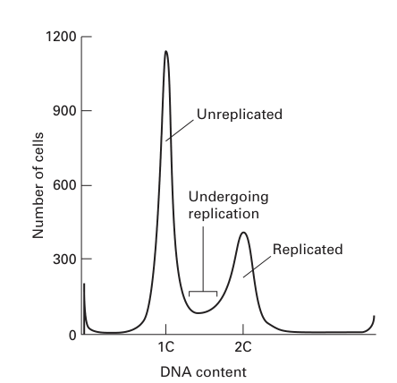
| Number of cells | 细胞数 |
| DNA content | DNA含量 |
| Unreplicated | 未复制DNA |
| Replicated | 已复制DNA |
| Undergoing replication | 正在复制 |
- 分离突变体的能力以及芽殖酵母和裂殖酵母强大的遗传学工具，使得人们能够分离出对细胞周期调控重要的关键遗传因子。
- 来自同步受精卵的蛙卵和早期胚胎为细胞周期事件的生化研究提供了提取物来源，使人们得以确认细胞周期蛋白-CDK复合物的振荡性质。
- 果蝇是研究细胞分裂与负责构建多细胞生物的发育程序之间相互作用的强有力系统。
- 人类组织培养细胞用于研究哺乳动物细胞周期的特性。
- 通过将细胞可逆地停滞在特定细胞周期阶段来产生同步细胞群体，使研究人员能够考察细胞周期中蛋白质和细胞过程的行为。
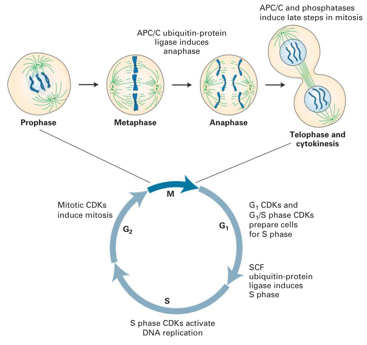
| Prophase | 前期 |
| Metaphase | 中期 |
| Anaphase | 后期 |
| Telophase and cytokinesis | 末期与胞质分裂 |
| APC/C and phosphatases induce late steps in mitosis | APC/C与磷酸酶诱导有丝分裂的后期步骤 |
| APC/C ubiquitin-protein ligase induces anaphase | APC/C泛素连接酶诱导后期 |
| SCF ubiquitin-protein ligase induces S phase | SCF泛素连接酶诱导S期 |
| Mitotic CDKs induce mitosis | 有丝分裂CDK诱导有丝分裂 |
| G1 CDKs and G1/S phase CDKs prepare cells for S phase | G1期CDK和G1/S期CDK使细胞为S期做好准备 |
| S phase CDKs activate DNA replication | S期CDK激活DNA复制 |
| G1 | G1期 |
| S | S期 |
| G2 | G2期 |
| M | M期 |
19.3 CDK活性的调控
以下各节将描述当前的真核细胞周期调控模型，图19-9对此作了概括。细胞周期研究中的一项关键发现是，细胞周期蛋白依赖性激酶（CDK）主导着细胞周期的进程。这些激酶有三个关键特征，在本章中需要始终牢记：
● CDK只有与调节性细胞周期蛋白亚基结合时才具有活性。
● 不同类型的细胞周期蛋白-CDK复合物启动不同的事件。G1期CDK和G1/S期CDK促进进入细胞周期，S期CDK触发S期，有丝分裂CDK启动有丝分裂的各项事件（图19-10）。
● 细胞中存在多种机制，确保不同的CDK只在它们所触发的细胞周期阶段才有活性。
本节中，我们首先讨论CDK的性质，并探讨其激活与调控的结构基础。随后我们将描述细胞周期蛋白如何激活CDK，并探讨把不同的细胞周期蛋白限制在适当细胞周期阶段的多重调控机制。我们将看到蛋白质降解在这一过程中起关键作用。此外，我们还将看到CDK的翻译后修饰，以及直接与细胞周期蛋白-CDK复合物结合的抑制性蛋白，如何充当重要的附加控制机制，把不同的CDK活性限制在适当的细胞周期阶段。
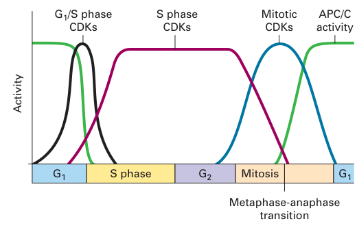
| Activity | 活性 |
| G1 phase | G1期 |
| G1/S phase CDKs | G1/S期CDK |
| S phase CDKs | S期CDK |
| Mitotic CDKs | 有丝分裂CDK |
| G2 phase | G2期 |
| S phase | S期 |
| Mitosis | 有丝分裂 |
| Metaphase-anaphase transition | 中期-后期转换 |
| APC/C | 后期促进复合物（APC/C） |
细胞周期蛋白依赖性激酶是小型蛋白激酶，其活性需要调节性细胞周期蛋白亚基
细胞周期蛋白依赖性激酶是一个小型（30–40 kD）丝氨酸/苏氨酸激酶家族。它们以单体形式存在时没有活性，需要结合一个激活亚基才能作为蛋白激酶发挥活性。在芽殖酵母和裂殖酵母中，单一的CDK控制细胞周期的进程，其活性由细胞周期阶段特异性的细胞周期蛋白亚基决定。哺乳动物细胞含有多达9种CDK，其中CDK1、CDK2、CDK4和CDK6这四种已被明确证明可调控细胞周期进程。它们与不同类型的细胞周期蛋白结合，并与这些细胞周期蛋白一起促进不同的细胞周期转换。CDK4和CDK6是促进进入细胞周期的G1期CDK，CDK2作为G1/S期和S期CDK发挥作用，CDK1则是有丝分裂CDK。由于历史原因，来自酵母和脊椎动物的各种细胞周期蛋白依赖性激酶名称各不相同。在可能的情况下，我们将使用G1、G1/S期、S期和有丝分裂CDK这些通用术语来描述CDK，而不使用物种特异性命名。表19-1列出了各种CDK的不同名称，并标明它们在细胞周期中的哪个阶段具有活性。
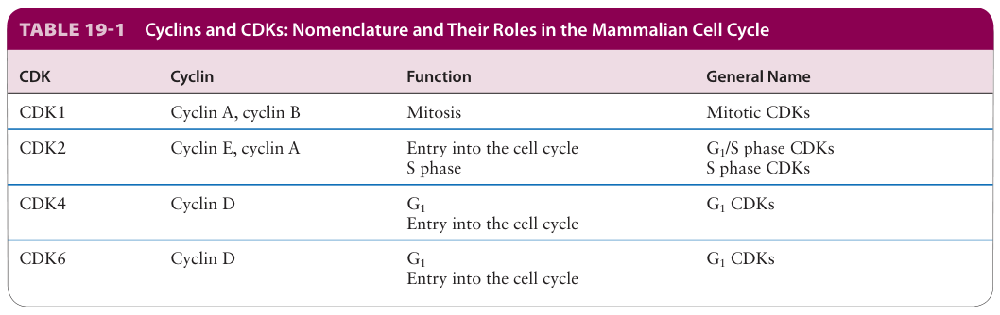
| General Name | 通用名称 |
| Cyclin | 细胞周期蛋白 |
| Function | 功能 |
| Cyclin A | 细胞周期蛋白A |
| Cyclin B | 细胞周期蛋白B |
| Mitotic CDKs | 有丝分裂CDK |
| Cyclin E | 细胞周期蛋白E |
| Entry into the cell cycle | 进入细胞周期 |
| G1/S phase CDKs | G1/S期CDK |
| S phase CDKs | S期CDK |
| Cyclin D | 细胞周期蛋白D |
| G1 CDKs | G1期CDK |
CDK不仅受细胞周期蛋白结合的调控，还受激活性磷酸化和抑制性磷酸化的调控。这些调控事件共同确保CDK只在适当的细胞周期阶段才有活性。CDK的三维结构为理解这些蛋白激酶的活性如何被调控提供了线索。未磷酸化的无活性CDK含有一个柔性区域，称为T环或激活环，它在蛋白激酶中高度保守，第16章对此有详细讨论。该环阻碍蛋白质底物接近结合着ATP的活性位点（图19-11a），这就解释了为什么未结合细胞周期蛋白的游离CDK几乎不具有蛋白激酶活性。与某个细胞周期蛋白配体结合的未磷酸化CDK在体外具有极低但可检测的蛋白激酶活性，不过在体内它可能基本没有活性。细胞周期蛋白与T环之间广泛的相互作用使T环的位置发生剧烈移动，从而暴露出CDK的活性位点（图19-11b）。正如我们稍后将看到的，细胞周期蛋白-CDK复合物的高活性需要T环中激活性苏氨酸被磷酸化，这会引起细胞周期蛋白-CDK复合物发生进一步的构象变化，大大增强其对蛋白质底物的亲和力（图19-11c）。因此，磷酸化复合物的激酶活性比未磷酸化复合物高100倍。
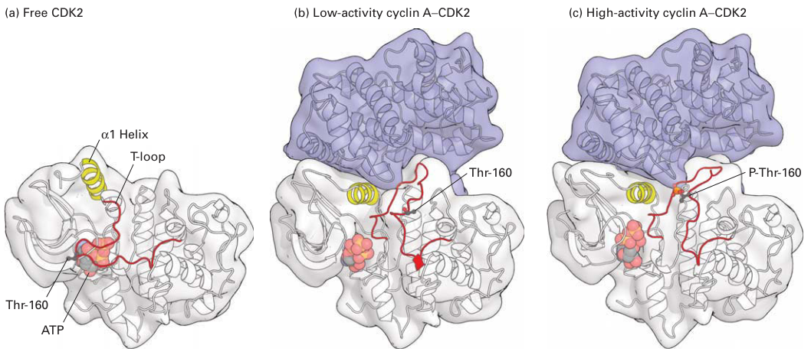
| T-loop | T环 |
| α1 Helix | α1螺旋 |
| (a) Free CDK2 | (a)游离CDK2 |
| (b) Low-activity cyclin A–CDK2 | (b)低活性细胞周期蛋白A–CDK2 |
| (c) High-activity cyclin A–CDK2 | (c)高活性细胞周期蛋白A–CDK2 |
| P-Thr-160 | 磷酸化苏氨酸160 |
细胞周期蛋白决定CDK的活性
细胞周期蛋白之所以得名，是因为其浓度在细胞周期中会发生变化。它们构成一个蛋白质家族，由三个关键特征定义：
● 细胞周期蛋白结合并激活CDK。任一给定CDK的活性和底物特异性，主要取决于它所结合的那个特定细胞周期蛋白。
● 细胞周期蛋白只在它们所触发的细胞周期阶段存在，在其他细胞周期阶段则不存在。
● 细胞周期蛋白不仅调控某个特定的细胞周期阶段，还会启动一系列事件为下一个细胞周期阶段做准备。通过这种方式，它们推动细胞周期向前推进。
细胞周期蛋白根据其在细胞周期特定阶段的出现和活性分为四类：G1期细胞周期蛋白、G1/S期细胞周期蛋白、S期细胞周期蛋白和有丝分裂细胞周期蛋白（见表19-1）。不同类型的细胞周期蛋白在蛋白质序列上彼此差异很大，但它们都含有一个保守的100个氨基酸的区域，称为细胞周期蛋白盒，并且具有相似的三维结构。
G1期细胞周期蛋白是协调细胞周期与细胞外事件的关键。它们的活性受信号转导通路调控，这些通路感受生长因子或细胞增殖抑制信号的存在。在后生动物中，G1期细胞周期蛋白称为细胞周期蛋白D，它们与CDK4和CDK6结合。G1期细胞周期蛋白的特别之处在于它们与其他细胞周期蛋白不同，其水平不出现剧烈波动。相反，响应于大分子生物合成和细胞外信号，它们的水平在整个细胞周期中逐渐升高。
G1/S期细胞周期蛋白在G1晚期积累，在细胞进入S期时达到峰值，并在S期下降（见图19-10）。在后生动物中它们称为细胞周期蛋白E，与CDK2结合。细胞周期蛋白E–CDK2复合物连同细胞周期蛋白D–CDK4/6，其主要功能是触发G1–S期转换。这一转换在酵母中称为START，在哺乳动物细胞中称为限制点，其定义是细胞不可逆地承诺进行细胞分裂、再也无法回到G1状态的那个时间点。用分子术语来说，这意味着细胞启动DNA复制并复制其中心体，而这是形成有丝分裂过程中将要使用的有丝分裂纺锤体的第一步。
S期细胞周期蛋白与G1期细胞周期蛋白同步合成，但其水平在整个S期保持高位，直到有丝分裂早期才下降。后生动物中有两类S期细胞周期蛋白触发S期：细胞周期蛋白E，它也能促进进入细胞周期，因此也是G1/S期细胞周期蛋白；以及细胞周期蛋白A。两种细胞周期蛋白都与CDK2结合（见表19-1），并直接负责DNA合成。正如我们将在19.4节中看到的，这些蛋白激酶磷酸化那些激活DNA解旋酶并把聚合酶加载到DNA上的蛋白质。
有丝分裂细胞周期蛋白与CDK1结合，促进进入有丝分裂并推动其进程。后生动物的有丝分裂细胞周期蛋白是细胞周期蛋白A和细胞周期蛋白B（注意，细胞周期蛋白A也可以在与CDK2结合时触发S期）。有丝分裂细胞周期蛋白-CDK复合物在S期和G2期合成，但正如我们稍后将看到的，在DNA合成完成之前它们的活性一直受到抑制。在19.5节中我们将看到，有丝分裂CDK一旦被激活，便通过磷酸化并激活数百种蛋白质来促进进入有丝分裂，从而推动染色体凝缩、核膜解体、有丝分裂纺锤体形成以及有丝分裂的其他方面。它们在后期被失活会促使细胞退出有丝分裂，这一过程包括有丝分裂纺锤体解体、染色体解凝缩、核膜重新形成，最终进行胞质分裂。
有丝分裂细胞周期蛋白是最早被发现的细胞周期蛋白，正是对它们的研究揭示了驱动细胞周期进程的活性具有振荡特性（见经典实验19-1和19-2）。随后的研究表明，G1/S期细胞周期蛋白具有类似的性质。它们的表达足以促进进入细胞周期，因此细胞周期进入所需的其他所有蛋白质都以不受限制的量存在。由此可见，细胞周期蛋白水平的调控是真核细胞周期的一个基本方面。正如我们将在下一节看到的，细胞使用多种机制把细胞周期蛋白限制在适当的细胞周期阶段，并使其保持在正确的浓度。
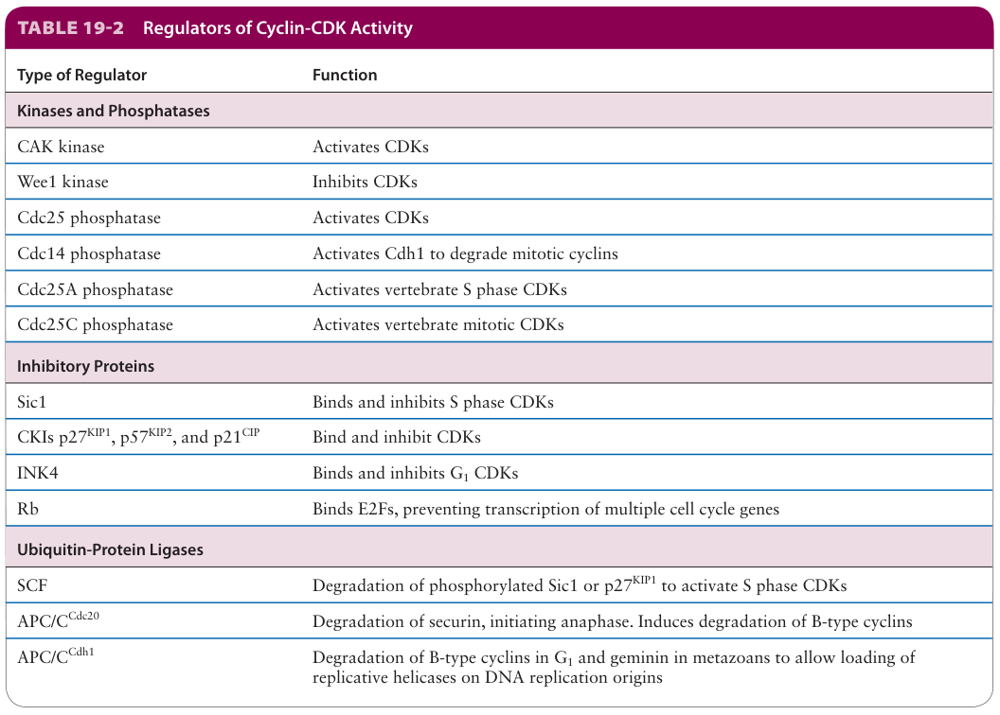
| Type of Regulator | 调控因子类型 |
| Function | 功能 |
| Kinases and Phosphatases | 激酶与磷酸酶 |
| CAK kinase | CAK激酶 |
| Wee1 kinase | Wee1激酶 |
| Cdc25 phosphatase | Cdc25磷酸酶 |
| Cdc14 phosphatase | Cdc14磷酸酶 |
| Cdc25A phosphatase | Cdc25A磷酸酶 |
| Cdc25C phosphatase | Cdc25C磷酸酶 |
| Inhibitory Proteins | 抑制蛋白 |
| CKIs | CDK抑制蛋白（CKI） |
| Ubiquitin-Protein Ligases | 泛素连接酶 |
细胞周期蛋白水平主要通过蛋白质降解来调控
多种机制确保CDK在细胞周期的正确阶段具有活性。表19-2列出了CDK的关键调控因子。CDK的及时激活部分取决于在需要它们的细胞周期阶段存在适当的细胞周期蛋白。本节中，我们讨论细胞周期蛋白水平的调控是如何实现的。对细胞周期蛋白亚基的转录调控是确保细胞周期蛋白在正确时间表达的一种机制。在体细胞和酵母中，一波波转录因子活性有助于建立一波波细胞周期蛋白活性。这里的一个普遍原则是，较早的一波转录活性有助于产生生成随后一波转录所必需的因子。正如我们将在19.4节看到的，G1/S期细胞周期蛋白的转录由E2F转录因子复合物促进。在E2F促进转录的许多其他基因中，包括编码促进有丝分裂细胞周期蛋白合成的转录因子的基因。
把细胞周期蛋白限制在适当细胞周期阶段的最重要调控，是泛素介导、依赖蛋白酶体的蛋白质降解。由于蛋白质降解是一个不可逆的过程，就其只能通过从头合成蛋白质来补充而言，这种调控机制非常适合确保细胞周期引擎被驱动向前，并且细胞无法在细胞周期中"倒退"。换言之，一旦某种细胞周期蛋白被降解，它所激活的过程便无法再发生。
回忆一下，在泛素介导的蛋白质降解过程中，泛素连接酶对底物蛋白进行泛素化，标记它们以便被蛋白酶体降解（见图3-31）。细胞周期蛋白通过两种不同的泛素连接酶的作用被降解：SCF（得名于其组分Skp1、Cullin和F-box蛋白的首字母）以及后期促进复合物或细胞周期体（本章缩写为APC/C）。SCF通过降解G1/S期细胞周期蛋白以及（我们稍后将详细看到的）CDK抑制蛋白来控制G1–S期转换。APC/C降解S期和有丝分裂细胞周期蛋白，从而促进退出有丝分裂。APC/C还通过降解一种后期抑制蛋白来控制中期-后期转换时染色体分离的开始（如19.6节所述）。
SCF和APC/C是多亚基泛素连接酶，属于泛素连接酶的RING指家族。尽管SCF和APC/C属于同一个泛素连接酶家族，但它们的调控方式相当不同。SCF只在其底物被磷酸化时才识别它们。它在整个细胞周期中持续有活性，而其底物受细胞周期调控的磷酸化确保它们只在细胞周期的特定阶段被降解。在APC/C依赖的蛋白质降解中，调控方式正好相反：底物在整个细胞周期中都可被识别，但APC/C的活性受到调控。APC/C在有丝分裂CDK和其他蛋白激酶的作用下，于中期-后期转换时被磷酸化激活。随后APC/C在有丝分裂的其余阶段以及G1期保持活性，促进细胞周期蛋白和其他有丝分裂调控因子的降解（见图19-10）。有活性的磷酸化APC/C的底物特异性，部分取决于它与两种相关的底物靶向因子之一（称为Cdc20和Cdh1）的结合。在后期，结合Cdc20的APC/C对抑制染色体分离的蛋白质进行泛素化；而在末期和G1期，结合Cdh1的APC/C则把不同的底物靶向降解。
APC/C的底物含有识别基序。最先被鉴定出来的是降解盒。它存在于大多数S期和有丝分裂细胞周期蛋白中，且是靶向蛋白质进行降解的充分必要条件。细胞周期蛋白降解的重要性同样首先在有丝分裂细胞周期蛋白上得到证明。删除有丝分裂细胞周期蛋白中的降解盒会阻止细胞退出有丝分裂，表明退出有丝分裂需要降解有丝分裂细胞周期蛋白（见经典实验19-2）。后来的研究表明，抑制其他细胞周期蛋白的降解同样会严重影响细胞周期进程，说明泛素介导的细胞周期蛋白降解是真核细胞周期的一个基本方面。
CDK受激活性磷酸化和抑制性磷酸化的调控
调控细胞周期蛋白水平并不是控制CDK活性的唯一机制。CDK亚基本身的激活性磷酸化和抑制性磷酸化事件对于控制细胞周期蛋白-CDK活性至关重要。该酶活性位点附近一个苏氨酸残基的磷酸化是CDK活性所必需的。这一磷酸化由CDK激活激酶（CAK）介导。在某些生物中，细胞周期蛋白结合是CAK磷酸化的前提；而在另一些生物中，这一磷酸化事件发生在细胞周期蛋白结合之前。尽管组装有活性CDK的顺序在不同生物间存在差异，但可以明确的是，CAK对CDK的磷酸化并不是CDK激活的限速步骤。CAK的活性在整个细胞周期中恒定，一旦细胞周期蛋白-CDK复合物形成，它便立刻磷酸化CDK。
CDK上的两个抑制性磷酸化也在控制CDK活性中起关键作用。与CAK引起的激活性磷酸化相反，这些抑制性磷酸化是受调控的。一个高度保守的酪氨酸（人CDK中为Y15）和相邻的一个苏氨酸（人中为T14）受到调控性磷酸化。这两个残基都位于CDK的ATP结合口袋中，它们的磷酸化很可能会干扰ATP在该口袋中的定位。这些位点磷酸化状态的变化对于有丝分裂CDK的调控至关重要，并且也被认为参与G1/S期和S期CDK的控制。正如我们将在19.5节看到的，一种高度保守的激酶Wee1实现这种抑制性磷酸化，而一种高度保守的磷酸酶Cdc25介导去磷酸化。
CDK抑制蛋白控制细胞周期蛋白-CDK活性
到目前为止，我们已经讨论了调控细胞周期蛋白水平和CDK磷酸化在控制CDK活性中的重要性。CDK调控中至关重要的最后一层控制，是一个称为CDK抑制蛋白（CKI）的蛋白质家族，它们直接结合细胞周期蛋白-CDK复合物并抑制其活性。正如我们将在19.4节看到的，这些蛋白质在G1–S期转换的调控及其与细胞外信号的整合中起着特别重要的作用。
所有真核生物都含有参与调控S期和有丝分裂CDK的CKI。尽管这些抑制蛋白彼此序列相似性很低，但它们都是防止S期和M期CDK过早活化所必需的。G1期CDK的抑制蛋白在介导细胞响应增殖抑制信号而发生G1期停滞中起关键作用。一类称为INK4（激酶4抑制蛋白）的CKI包括若干小型的、彼此密切相关的蛋白质，它们只与G1期CDK相互作用。INK4与CDK4和CDK6结合会阻断它们与细胞周期蛋白D的相互作用，从而阻断其蛋白激酶活性。后生动物细胞中发现的第二类CKI由三种蛋白质组成——p21CIP、p27KIP1和p57KIP2。
这些CKI抑制G1/S期CDK和S期CDK，并且必须在DNA复制开始之前被降解。正如我们将在19.7节讨论的，p21CIP在后生动物细胞对DNA损伤的响应中起重要作用。调控G1期CDK的CKI在防止肿瘤形成中起关键作用。例如，在很大一部分人类癌症中，编码p16的INK4基因的两个拷贝都被发现失活（见第24章）。
基因工程改造的CDK促成了CDK功能的发现
不同的CDK通过磷酸化特定的蛋白质来启动不同的细胞周期时相。现在很清楚，CDK并非只磷酸化少数几个进而启动某个细胞周期阶段的蛋白质，而是磷酸化大量底物，从而直接启动某一特定细胞周期时相的所有方面。对少数底物的分析提供了一些例子，说明有丝分裂CDK的磷酸化如何介导有丝分裂的许多早期事件：染色体凝缩、有丝分裂纺锤体形成和核膜解体。我们将在后续各节详细讨论这些事件。
近年来，人们已开始系统性地鉴定所有CDK底物。鉴定某种特定激酶的底物的难点在于，要把该激酶的磷酸化事件与其他激酶所执行的磷酸化事件区分开来。在理解哪些蛋白质是CDK靶标方面的一个突破，得益于一种CDK突变体的构建，该突变体能够利用一种其他激酶不能结合的ATP类似物。这种ATP类似物在腺嘌呤的N6位连有一个庞大的苄基基团，使该类似物体积过大，无法装入野生型蛋白激酶的ATP结合口袋。然而，突变体CDK的ATP结合口袋经过改造，能够容纳这种N6-苄基ATP类似物。因此，只有突变体CDK能利用这种ATP类似物作为底物，把它的γ磷酸基团转移到蛋白质侧链上。当带有标记γ磷酸基团的N6-苄基ATP类似物与含有ATP结合口袋已改造的重组有丝分裂CDK的细胞提取物一起孵育时，多种蛋白质被标记。在酵母中，这一方法鉴定出了大多数已知的CDK底物，外加150多种其他酵母蛋白质。类似的方法也被用于哺乳动物细胞以鉴定CDK底物。例如，对S期细胞周期蛋白A-CDK2复合物底物的一次搜寻揭示了180种潜在的底物。目前正在分析这些底物在细胞周期过程中的功能。
- 细胞周期蛋白依赖性激酶由细胞周期蛋白亚基激活。其活性在多个层面上受到控制。
- 不同的细胞周期蛋白亚基在不同的细胞周期阶段激活CDK。细胞周期蛋白只在它们所促进的细胞周期阶段存在。
- 蛋白质降解是把细胞周期蛋白限制在适当细胞周期阶段的关键机制。这种降解由泛素-蛋白酶体系统以及泛素连接酶APC/C和SCF介导。
- CDK亚基的激活性磷酸化和抑制性磷酸化有助于CDK活性的调控。
- CDK抑制蛋白（CKI）通过直接结合细胞周期蛋白-CDK复合物来抑制CDK活性。
- CDK通过磷酸化许多不同的靶蛋白来启动每个细胞周期阶段的所有方面。利用经过工程改造、只能结合修饰形式ATP的蛋白激酶所进行的系统性研究，已鉴定出许多这类底物。
19.4 细胞周期承诺与DNA复制
上一节介绍了控制不同细胞周期蛋白-CDK复合体的多种机制。在本节及接下来的两节中，我们仔细考察每一个细胞周期阶段，并讨论它是如何被诱导和控制的。我们考察细胞如何启动DNA复制和有丝分裂，以及染色体如何分离。我们重点关注细胞周期蛋白-CDK复合体和其他关键细胞周期调控因子如何影响每个细胞周期时相，并考察协调它们活性的机制。
本节探讨细胞如何决定是否进行细胞分裂，以及DNA复制如何启动。细胞周期进入的过程在芽殖酵母中已被充分了解，最初正是在这种生物中阐明了这一细胞周期转换背后的分子机制。因此，我们先考察芽殖酵母中控制细胞周期进入的分子事件。随后我们研究酵母与后生动物细胞中控制细胞周期进入的通路之间惊人的相似性，并讨论这样一个认识：参与这一决定的许多基因在癌中经常被发现发生突变。接下来我们了解进入细胞周期的决定如何受到细胞外事件的影响，并学习将这些环境信号传递给细胞周期机器的信号转导机制。最后，我们讨论控制DNA复制起始的分子机制。我们将了解为什么S期CKI的降解对这一过程至关重要，发现CDK如何确保DNA复制只在S期发生且只发生一次，并了解在DNA复制过程中与DNA结合的蛋白质如何为有丝分裂期间染色体的准确分离奠定基础。
细胞在称为START或限制点的细胞周期时点不可逆地承诺分裂
在大多数真核细胞中，决定细胞是否会分裂的关键在于是否进入S期。在多数情况下，细胞一旦承诺进入细胞周期，就必须完成整个周期。芽殖酵母（酿酒酵母）以此方式调控其增殖，而我们对控制细胞周期进入的分子机制的许多现有认识，都源自对酿酒酵母的遗传学研究。
回顾一下，酿酒酵母存在两种不同的交配型，a和α（见图1-23）。这两种单倍体细胞类型可以交配形成a/α二倍体细胞。交配由分泌的信息素启动，最终导致两个相反交配型的细胞融合。对成功交配而言至关重要的是，两个交配伙伴都必须停滞在G1期。因此，除了诱导对交配至关重要的基因外，信息素还使细胞停滞在G1期。如果细胞处于G1期，加入信息素会使细胞持续停滞在G1期，但一旦细胞承诺分裂后，它必须完成整整一个细胞周期，才能再次被信息素停滞在G1期。酿酒酵母细胞即使在信息素存在的情况下也变得不可逆地承诺进入并走完整个细胞周期的那个G1晚期时点，称为START。哺乳动物细胞中存在一个类似的转换点，称为限制点，一旦通过该点，细胞便对生长因子信号和增殖抑制因子信号不再敏感。
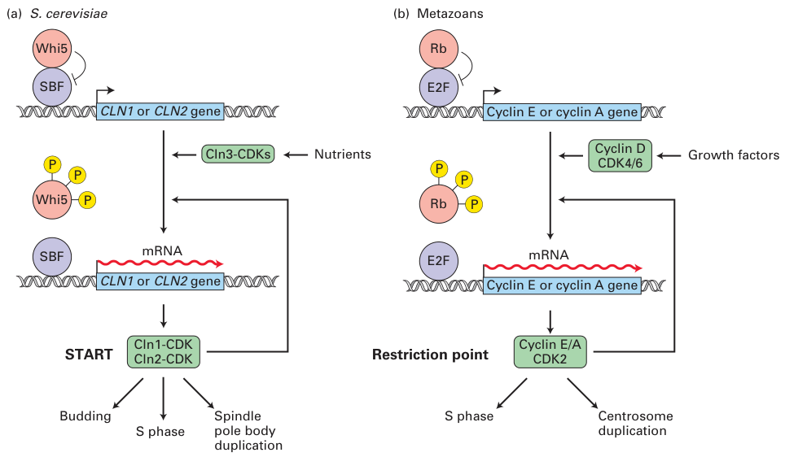
| S. cerevisiae | 酿酒酵母 |
| Cln3-CDKs | Cln3-CDK |
| Nutrients | 营养物 |
| S phase | S期 |
| Centrosome | 中心体 |
| Spindle pole body | 纺锤体极体 |
| Cyclin E/A | 细胞周期蛋白E/A |
| Restriction point | 限制点 |
| Metazoans | 后生动物 |
| Cyclin D | 细胞周期蛋白D |
| Growth factors | 生长因子 |
CDK活性对进入S期至关重要。这一点最初是在芽殖酵母中认识到的：在芽殖酵母中，温度敏感型CDK突变体停滞在G1期，无法形成芽体，也无法启动DNA复制（芽殖酵母只有一种CDK触发所有细胞周期转换，称为CDC28）。我们现在知道，一个CDK级联反应触发进入细胞周期。G1期细胞周期蛋白-CDK复合体刺激G1/S期细胞周期蛋白-CDK的形成，后者随即启动芽体形成、中心体复制和DNA复制。在酵母中，G1期细胞周期蛋白基因称为CLN3（图19-12a）。其mRNA在整个细胞周期中以几乎恒定的水平产生，但其翻译受到营养水平的调节，而且正如我们稍后将看到的，它是将细胞周期进入与营养信号偶联的关键。一旦从mRNA合成出足够的Cln3，Cln3-CDK复合体便磷酸化并失活转录抑制因子Whi5。Whi5的磷酸化促进其输出细胞核，使转录因子复合体SBF能够诱导G1/S期细胞周期蛋白基因CLN1和CLN2以及其他对DNA复制重要的基因转录。一旦产生，Cln1/2-CDK便促进Whi5的进一步磷酸化。这一正反馈环确保了G1/S期细胞周期蛋白-CDK的快速积累。细胞周期中50%的Whi5已退出细胞核的那个时点，就是细胞不可逆地承诺分裂的时点。它是START的分子定义。随后Cln1/2-CDK触发芽体形成、进入S期以及中心体（在酵母中又称纺锤体极体）的复制，中心体在细胞周期后期将组织有丝分裂纺锤体。
E2F转录因子及其调控因子Rb控制后生动物的G1–S期转换
哺乳动物细胞——实际上所有后生动物细胞——中控制进入S期的分子事件与芽殖酵母中惊人的相似（图19-12b）。G1期细胞周期蛋白在整个G1期都存在，并且常常发现其表达水平响应生长因子而升高。反过来，G1期CDK激活一个相关转录因子小家族的成员，这些成员统称为E2F转录因子（E2F）。在G1期，E2F通过与视网膜母细胞瘤蛋白（Rb）结合而保持失活状态，直到G1期CDK通过磷酸化并失活Rb来激活E2F。E2F随后激活编码许多参与DNA合成蛋白的基因。它们还刺激编码G1/S期细胞周期蛋白和S期细胞周期蛋白的基因转录。因此，E2F在G1晚期具有与酿酒酵母转录因子复合体SBF相似的功能。
E2F功能调控的关键是Rb（视网膜母细胞瘤）蛋白。当E2F与Rb结合时，它们作为转录抑制因子发挥作用。这是因为Rb招募染色质修饰酶，这些酶促进特定组蛋白赖氨酸的去乙酰化和甲基化，使染色质采取凝缩的、转录失活的形式。RB最初被鉴定为在视网膜母细胞瘤（一种视网膜的儿童期癌）中发生突变的基因。随后的研究发现，Rb在许多癌中失活，其原因或是RB的两个等位基因均发生突变，或是Rb磷酸化受到异常调控。
哺乳动物细胞中G1期CDK对Rb蛋白的调控，与酵母中Cln3-CDK对Whi5的调控类似。G1期CDK对多个位点的磷酸化阻止Rb与E2F结合，并促进其输出细胞核。这使E2F能够激活进入S期所需基因的转录。一旦部分Rb分子被磷酸化从而诱导了编码G1/S期细胞周期蛋白和CDK的基因表达，所产生的G1/S期CDK复合体便进一步磷酸化G1晚期的Rb。这是导致细胞通过限制点的主要生物化学事件之一。由于E2F既刺激自身的表达，也刺激G1/S期细胞周期蛋白-CDK的表达，E2F与G1/S期细胞周期蛋白-CDK之间的正交互调控使两者活性在G1晚期迅速升高。
随着S期CDK和有丝分裂CDK的积累，它们在S期、G2期和M期早期全程维持Rb蛋白处于磷酸化状态。细胞完成后期并进入G1早期或G0期后，所有细胞周期蛋白-CDK活性的下降导致Rb去磷酸化。因此，低磷酸化的Rb可在下一个周期的G1早期以及G0期停滞的细胞中抑制E2F活性。于是G1/S期CDK活性一直保持低下，直到细胞决定进入新的细胞周期，由G1期CDK打破Rb对E2F的抑制性钳制。
细胞外信号调控细胞周期进入
细胞是否进入细胞周期，既受细胞外信号影响，也受细胞内信号影响。例如，酵母等单细胞生物只有在达到适当大小（即临界细胞大小）时才会进入细胞周期。而这一临界大小又受环境中可用营养物的控制。细胞大小与细胞周期进入之间的这种协调将在19.7节中讨论。这里我们只讨论这样一个事实：G1期细胞周期蛋白的合成对蛋白质合成速率作出响应，而后者又受环境中营养物调节的通路所控制。大分子生物合成机器与细胞周期机器之间的这种联系在芽殖酵母中了解得最清楚。在这种生物中，G1期细胞周期蛋白转录本CLN3含有一个短的上游开放阅读框，当营养物有限时它抑制翻译起始。当营养物充足时，这种抑制减弱。在营养物充足的情况下，感知营养物和生长因子信号的TOR信号通路处于活性状态，并刺激翻译活性（见图10-32）。由于Cln3是一种极不稳定的蛋白，其浓度随其mRNA的翻译速率而波动。因此，依赖于Cln3蛋白浓度的Cln3-CDK复合体的量和活性受营养水平的调节。
在多细胞生物中，细胞被营养物所包围，因此营养物通常不限制细胞增殖的速率。相反，细胞增殖受细胞周围是否存在生长促进因子（促分裂原）和生长抑制因子（抗促分裂原）的控制。向G0期停滞的哺乳动物细胞添加促分裂原会诱导——如第16章所讨论的——受体酪氨酸激酶连接的信号转导通路，这些通路启动信号转导级联，最终影响转录和细胞周期调控。它们通过多种方式实现这一点。
促分裂原激活多种基因的转录。这些基因大多分为两类之一——早期应答基因或延迟应答基因——取决于其编码的mRNA出现得有多快。早期应答基因的转录在加入生长因子后几分钟内，由激活胞质或细胞核中预先存在的转录因子的信号转导级联所诱导（见第16章）。许多早期应答基因编码转录因子，如c-Fos和c-Jun，它们刺激延迟应答基因的转录。早期应答转录因子Myc诱导G1期细胞周期蛋白和CDK基因的转录。除了受转录控制外，G1期CDK还受CKI的调控。CKI p15INK4b是一种强效的CDK抑制蛋白。在某些组织中，促分裂原通过抑制其转录来抑制这种CKI的产生。
许多组织中的细胞增殖不仅受促进增殖的促分裂原调控，还受阻止进入细胞周期的抗促分裂原调控。同样，在分化过程中，细胞停止分裂并进入G0期。某些分化细胞（如成纤维细胞和淋巴细胞）可被刺激重新进入细胞周期并进行复制。然而，许多有丝分裂后分化的细胞永远不会再次进入细胞周期进行复制。抗促分裂原和分化通路阻止G1期CDK的积累。它们拮抗G1期细胞周期蛋白的产生，并诱导CKI的产生。转化生长因子β（TGF-β）是一种重要的抗促分裂原。这种激素诱导一个信号级联，通过诱导p15INK4b的表达而导致G1期停滞。正如我们将在第24章看到的，调控G1期CDK的信号通路在许多人类癌中被发现发生突变。
S期CDK抑制蛋白的降解触发DNA复制
进入S期以DNA复制起点的解旋为标志。导致这一解旋的分子事件在酿酒酵母中了解得最清楚。G1/S期CDK在这一过程中起关键作用。它们关闭在退出有丝分裂和G1期期间降解S期细胞周期蛋白的机器，并诱导一种抑制S期CDK的CKI降解。
G1/S期细胞周期蛋白-CDK复合体的重要底物之一是Cdh1。在后期晚期，这一底物靶向因子指导APC/C对底物蛋白（包括S期和有丝分裂细胞周期蛋白）进行泛素化，标记它们以便被蛋白酶体蛋白酶解。APC/CCdh1在整个G1期保持活性，防止S期和有丝分裂细胞周期蛋白过早积累。G1/S期细胞周期蛋白-CDK对Cdh1的磷酸化使其从APC/C复合体上解离，从而在G1晚期抑制S期和有丝分裂细胞周期蛋白的进一步泛素化（图19-13）。这种抑制，加上G1晚期S期细胞周期蛋白转录的诱导，使S期细胞周期蛋白随着G1/S期细胞周期蛋白-CDK水平的升高而积累。在细胞周期后期，S期和有丝分裂CDK接手，使Cdh1维持在磷酸化因而无活性的状态。只有当有丝分裂CDK下降、一种称为Cdc14的蛋白磷酸酶被激活时，这些抑制性磷酸基团才从Cdh1上移除，导致其重新活化。在哺乳动物细胞中，类似的机制负责稳定S期和有丝分裂细胞周期蛋白，但参与Cdh1去磷酸化的磷酸酶尚未被鉴定出来。
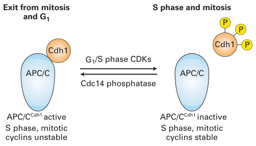
| APC/C | 后期促进复合物（APC/C） |
| active | 有活性 |
| inactive | 无活性 |
| G1/S phase CDKs | G1/S期CDK |
| Cdc14 phosphatase | Cdc14磷酸酶 |
| Exit from mitosis and G1 | 退出有丝分裂和G1期 |
| S phase and mitosis | S期和有丝分裂 |
| S phase and mitotic cyclins | S期和有丝分裂细胞周期蛋白 |
在酿酒酵母中，随着APC/CCdh1失活后S期细胞周期蛋白-CDK异二聚体在G1晚期积累，它们立即被一种称为Sic1的CKI结合而失活，Sic1在有丝分裂晚期和G1早期表达（图19-14）。由于Sic1特异性地抑制S期和M期CDK复合体，而对G1期CDK和G1/S期CDK复合体没有影响，因此它起着S期抑制蛋白的作用。当Sic1抑制蛋白经SCF泛素连接酶泛素化后被骤然降解时，DNA复制便启动。
Sic1的降解由其被G1/S期CDK磷酸化所诱导（见图19-14）。它必须至少在六个位点被磷酸化——这些位点对G1/S期CDK而言是相对较差的底物——才能被SCF足够牢固地结合从而被泛素化。这些多个较差的G1/S期CDK磷酸化位点导致Sic1降解出现超敏感的、开关式的响应，从而骤然激活S期CDK（图19-15）。如果Sic1在单个位点磷酸化后就被失活，那么一旦G1/S期CDK活性水平开始升高，Sic1分子就会开始被磷酸化，导致Sic1水平逐渐下降。相反，由于需要多个位点被磷酸化，在G1/S期CDK活性水平低时只有少数位点被磷酸化，Sic1不会被破坏。只有当G1/S期CDK水平高时，Sic1才在多个位点被充分磷酸化，从而被靶向降解。因此，只有当G1/S期CDK活性达到峰值、且几乎所有其他G1/S期CDK底物都已被磷酸化时，Sic1降解才会发生。
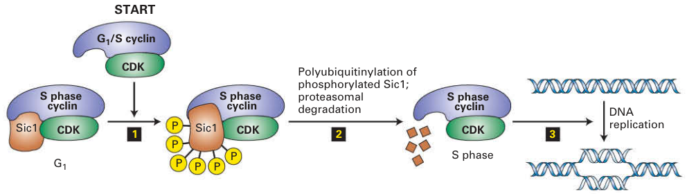
| G1/S cyclin | G1/S期细胞周期蛋白 |
| S phase cyclin | S期细胞周期蛋白 |
| S phase | S期 |
| DNA replication | DNA复制 |
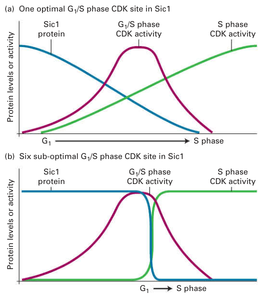
| Protein levels or activity | 蛋白水平或活性 |
| Sic1 protein | Sic1蛋白 |
| S phase CDK activity | S期CDK活性 |
| G1/S phase CDK activity | G1/S期CDK活性 |
| S phase | S期 |
一旦Sic1被降解，S期细胞周期蛋白-CDK复合体便通过——正如我们稍后将看到的——磷酸化若干参与激活复制解旋酶的蛋白来诱导DNA复制。这种激活S期细胞周期蛋白-CDK复合体的机制——即在细胞周期蛋白合成时先抑制它们，然后骤然降解抑制蛋白——使得大量复制起点能够突然启动复制。蛋白酶解在控制细胞通过这一关键时点方面的明显优势在于，蛋白质降解是一个不可逆的过程，确保细胞沿一个方向走完细胞周期。
后生动物细胞中进入S期由与芽殖酵母相似的机制调控。与Sic1一样，CKI p27在G1期防止S期CDK过早激活。然而与Sic1不同的是，这种CKI同时抑制S期CDK和G1/S期CDK，并具有额外的细胞周期功能。例如，在抑制G1/S期CDK和S期CDK的同时，p27还帮助组装并因而激活G1期CDK。然而，与酵母中的Sic1一样，p27通过泛素依赖性蛋白质降解从细胞周期蛋白-CDK复合体上被移除。有两条通路促成其降解。在受促分裂原刺激后，促分裂原激活的蛋白激酶磷酸化p27，促进其从细胞核输出到细胞质，细胞中的一种泛素连接酶KPC就存在于细胞质中。第二条通路与作用于Sic1的通路类似，在G1-S期转换时靶向p27使其降解。当G1/S期CDK和S期CDK在G1晚期和S期早期达到高水平时，它们开始磷酸化p27，靶向它以便被SCF泛素化。p27的降解导致G1/S期和S期CDK激活。这些激酶随后通过磷酸化对DNA复制起始重要的蛋白来启动S期。
每个复制起点的复制在细胞周期中一次且仅一次地启动
如第5章所讨论的，真核生物染色体从多个复制起点进行复制。从这些起点起始的复制贯穿整个S期发生。然而，没有任何真核生物起点在一个S期中启动复制超过一次。此外，S期一直持续到每条染色体上多个起点的复制导致整条染色体完全复制为止。这两个因素确保细胞增殖过程中维持正确的基因拷贝数。
S期CDK在DNA复制的调控中起关键作用。这些激酶只在G1-S期转换时启动DNA复制，并防止从已经激发的起点重新起始。我们首先讨论DNA复制的起始如何被控制，以及S期CDK在这一过程中的作用，然后再讨论这些激酶防止重新起始的机制。
DNA复制起始的机制在芽殖酵母中了解得最清楚，因此我们将讨论集中在这种生物上。然而，需要指出的是，控制DNA合成起始的蛋白和机制在所有真核生物物种中基本相同。一种称为起点识别复合体（ORC）的蛋白复合体与所有DNA复制起点结合。在芽殖酵母中，复制起点含有一段11 bp的保守核心序列，ORC与之结合。在多细胞生物中，DNA复制起点缺乏可识别的共有序列。取而代之的是，染色质相关因子将ORC靶向到DNA上。在G1期，ORC与另外两个复制起始因子Cdc6和Cdt1在起点处结合，将称为MCM解旋酶复合体的复制解旋酶装载到DNA上（图19-16，步骤1）。MCM解旋酶的功能是在DNA复制起始过程中解开DNA双链。
为确保起点在S期开始时只激发一次，MCM解旋酶复合体的装载与其激活发生在两种相反的磷酸化状态下。MCM解旋酶只能在CDK活性低的状态下装载到DNA上，这种状态出现在退出有丝分裂期间和G1早期CDK被失活时。换言之，MCM解旋酶在未磷酸化时装载到DNA上。相反，MCM解旋酶的激活以及DNA聚合酶向已解旋的起点DNA的招募由S期CDK触发。回顾一下，只有当G1/S期CDK水平达到峰值且S期CDK的CKI被破坏时，S期CDK才变得有活性。正是在那时，S期CDK和第二种异二聚体蛋白激酶DDK的磷酸化激活MCM解旋酶，并将DNA聚合酶招募到复制起始位点（图19-16，步骤2和3）。
那么S期CDK和DDK如何协作起始DNA复制呢？ORC和另外两个起始因子Cdc6和Cdt1在G1期CDK活性低时将MCM解旋酶招募到复制起始位点（见图19-16，步骤1）。当DDK和S期CDK在G1晚期被激活时，DDK磷酸化MCM解旋酶的两个亚基。S期CDK磷酸化两个称为Sld2和Sld3的蛋白。这些磷酸化事件（在图19-16中以绿色显示，步骤2和3）具有激活作用，促进MCM解旋酶激活因子被招募到复制起始位点。这些解旋酶激活因子称为Cdc45-Sld3复合体和GINS复合体。它们究竟如何促进MCM解旋酶的激活尚不清楚。除了激活MCM解旋酶以解开DNA外，它们还将聚合酶招募到DNA上：聚合酶ε合成前导链，聚合酶δ合成后随链（见图19-16，步骤3）。随后复制机器启动DNA合成。
S期CDK不仅对启动DNA复制至关重要，还负责确保每个起点在S期只激发一次。S期起点的重新激发通过磷酸化MCM解旋酶装载机器的若干组分以及MCM解旋酶复合体本身来防止。为了将这些磷酸化事件与DNA复制起始所需的磷酸化事件区分开，它们在图19-16中以黄色表示。在MCM解旋酶激活的同时，Cdc6和Cdt1从DNA复制起始位点解离。一旦它们解离，其磷酸化便导致它们被SCF泛素连接酶降解。MCM解旋酶的磷酸化导致这些蛋白在DNA复制完成、从DNA上解离后被输出细胞核。因此，只有在退出有丝分裂期间CDK活性被APC/CCdh1降低之后，MCM解旋酶才能重新装载到DNA上。结果，解旋酶装载被限制在有丝分裂晚期和G1早期（见图19-16，步骤1）。
后生动物细胞中控制DNA复制起始的一般机制与酿酒酵母中的相似，尽管在脊椎动物中存在一些小的差异。解旋酶在G1期CDK活性低时装载。G1/S期CDK和S期CDK对MCM解旋酶激活因子的磷酸化激活解旋酶并促进聚合酶装载。与酵母中一样，MCM解旋酶装载因子的磷酸化防止MCM解旋酶重新装载，直到细胞通过有丝分裂，从而确保每个起点的复制在每个细胞周期中只发生一次。在这里，多种蛋白激酶（包括CDK）对Cdt1的磷酸化对防止MCM解旋酶重新装载尤为关键。此外，一种小蛋白geminin有助于抑制起点的重新起始，直到细胞完成一个完整的细胞周期。Geminin在G1晚期表达；一旦DNA复制在S期启动、MCM解旋酶装载因子从起点上释放，它便结合并抑制这些装载因子（见图19-16，步骤2）。Geminin的N端含有一个降解盒，可被APC/CCdh1识别，使其在后期晚期被泛素化并被蛋白酶体降解。其降解释放了MCM解旋酶装载因子，这些因子随着CDK活性下降也被去磷酸化，从而能够在下一个G1期与复制起点上的ORC结合并装载MCM解旋酶。
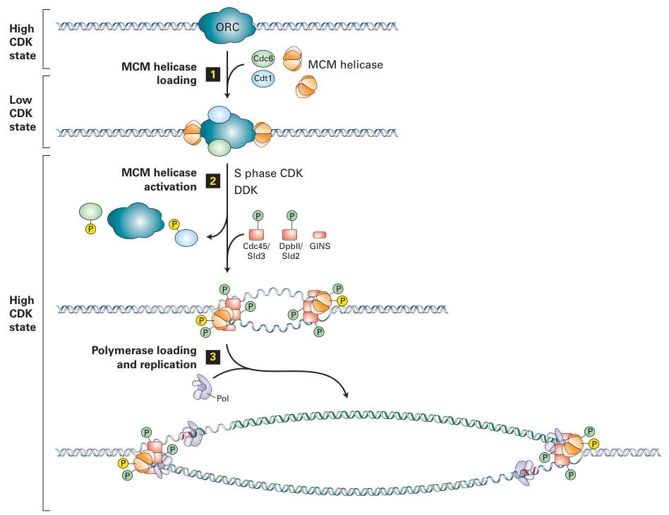
| MCM helicase | MCM解旋酶 |
| S phase CDK | S期CDK |
| High CDK state | 高CDK状态 |
| Low CDK state | 低CDK状态 |
| MCM helicase loading | MCM解旋酶装载 |
| MCM helicase activation | MCM解旋酶激活 |
| Polymerase loading and replication | 聚合酶装载与复制 |
| Pol | 聚合酶 |
复制的DNA链在复制过程中被连接起来
在S期，随着染色体被复制形成姐妹染色单体，它们通过蛋白质连接彼此拴系在一起。S期建立起来的姐妹染色单体之间的连接，对它们在有丝分裂期间的准确分离至关重要。
建立姐妹染色单体之间这些连接的是称为黏连蛋白的蛋白复合体。它们由四个亚基组成：Smc1、Smc3、Scc1（有时称为Rad21）和Scc3（图19-17a）。Smc1和Smc3属于SMC蛋白家族，其特征是拥有长的卷曲螺旋结构域，其两侧是含有ATP酶活性的球状结构域。ATP酶结构域与Scc1和Scc3相互作用，共同形成一个环状结构。这些黏连蛋白环拥抱一份或两份复制的DNA。当黏连蛋白失活时，姐妹染色单体不能正确地相互结合。
由黏连蛋白介导的姐妹染色单体之间的黏连通过两步过程建立，并与DNA复制紧密相连。黏连蛋白在G1期与染色体结合；这种结合需要黏连蛋白装载因子Scc2和Scc4（图19-17b，步骤1）。在细胞周期的这一时相，黏连蛋白在染色体上相当动态。它们不断被由Pds5和Wapl蛋白组成的黏连蛋白相关复合体卸载。黏连蛋白在分裂间期的这种动态性，很可能对其调控分裂间期染色质结构和基因表达的作用很重要。黏连蛋白在DNA复制过程中获得其黏连特性。当复制叉复制DNA时，两条复制的DNA链陷入黏连蛋白环内（图19-17b，步骤2）。将DNA结合的G1期黏连蛋白转变为黏连性复合体，需要黏连蛋白乙酰转移酶（CoAT）对Smc3亚基进行乙酰化。这种乙酰化阻止Pds5-Wapl卸载黏连蛋白，从而稳定染色体上的黏连蛋白。在脊椎动物中，黏连蛋白的这种稳定需要黏连蛋白相关因子sororin（图19-17b，步骤2）。正如我们将在19.6节看到的，黏连蛋白对复制的姐妹染色单体准确附着到有丝分裂纺锤体以及在有丝分裂期间的分离至关重要。缺乏黏连蛋白或将其装载到染色体上的因子的细胞，会随机分离染色体。
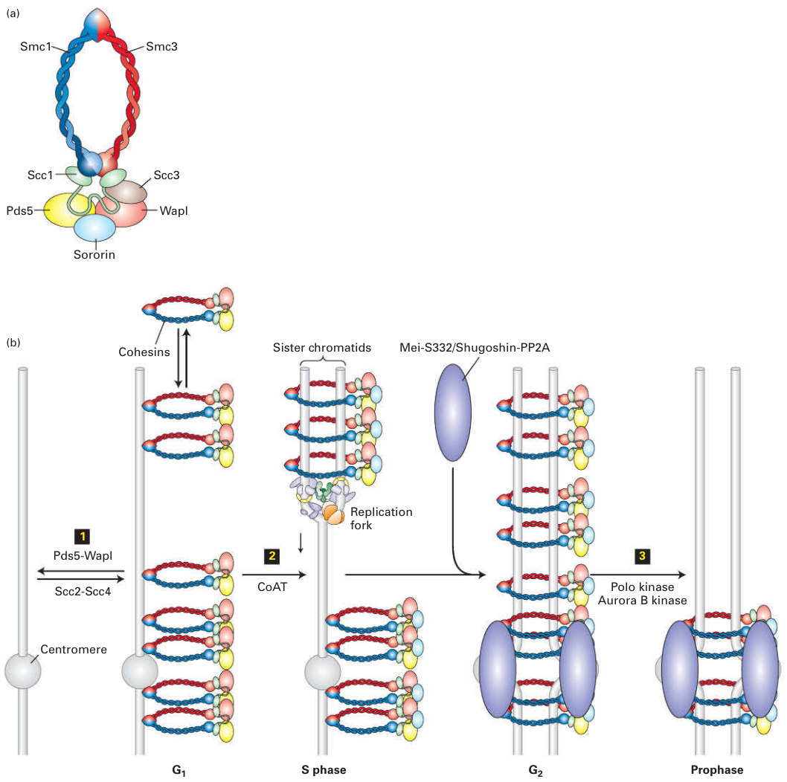
| Cohesins | 黏连蛋白 |
| Sister chromatids | 姐妹染色单体 |
| Centromere | 着丝粒 |
| Replication fork | 复制叉 |
| S phase | S期 |
| G1 | G1期 |
| G2 | G2期 |
| Prophase | 前期 |
| Polo kinase | Polo激酶 |
| Aurora B kinase | Aurora B激酶 |
黏连蛋白不仅对建立复制的DNA分子之间的连接、从而对它们在有丝分裂期间的准确分离至关重要，而且还调控基因表达。黏连蛋白在这一过程中的功能似乎是多样的。在某些情况下，黏连蛋白促进基因表达，而在另一些情况下则抑制它。然而，黏连蛋白实现基因表达控制的机制在两种情况下是相同的：黏连蛋白促进染色质环形成，从而使增强子或抑制性元件靠近转录起始位点。黏连蛋白基因表达调控功能的缺陷是一组统称为黏连蛋白病（cohesinopathy）的疾病的病因。在这些疾病中，黏连蛋白亚基或黏连蛋白装载因子的突变破坏了发育关键基因的表达，导致肢体和颅面部异常以及智力障碍。然而，在这些疾病中，黏连蛋白的姐妹染色单体黏连功能似乎是完好的。相反，正如我们将在19.8节看到的，减数分裂期间黏连蛋白黏连功能的缺陷会导致流产和智力障碍。■
- 在酵母中，START定义了G1期中的一个阶段，越过该阶段后细胞便不可逆地承诺进入细胞周期。从分子层面定义，它就是50%的Whi5已退出细胞核的那个时点。
- 促进进入细胞周期的分子事件在不同物种间是保守的。G1期CDK抑制一种转录抑制因子。这使得G1/S期细胞周期蛋白基因以及其他对S期重要的基因得以转录。
- 细胞外信号，如在酵母中的营养状态、在脊椎动物中促分裂原和抗促分裂原的存在，调控细胞周期的进入。
- 称为促分裂原的各种多肽生长因子通过诱导早期应答基因的表达，刺激培养的哺乳动物细胞增殖。这些基因中有许多编码转录因子，它们刺激编码G1/S期细胞周期蛋白和E2F转录因子的基因表达。
- G1/S期CDK磷酸化并抑制Cdh1，后者是指导后期促进复合物（APC/C）对S期和M期细胞周期蛋白进行泛素化的特异性因子。这使S期细胞周期蛋白能够在G1晚期积累。
- 在酵母中，S期CDK最初被Sic1抑制。磷酸化标记Sic1使其被SCF泛素连接酶泛素化并经蛋白酶体降解，从而释放出被激活的S期CDK，触发S期的开始（见图19-14）。
- DNA复制从称为复制起点的解旋酶装载位点起始。
- MCM解旋酶的装载和激活发生在互斥的细胞周期状态中：MCM解旋酶装载只能在CDK活性低时（G1早期）发生；而MCM解旋酶在CDK活性高时被激活。
- S期CDK和DDK通过将MCM解旋酶激活因子招募到起点，触发DNA复制的起始（见图19-16）。
- 每个起点的DNA复制起始在细胞周期中只发生一次，因为S期CDK在激活解旋酶的同时还阻止额外的解旋酶装载到DNA上。
- 黏连蛋白建立复制的DNA分子之间的连接，这些连接对它们在细胞周期后期的准确分离至关重要。这种连接机制与DNA复制相偶联。
19.5 进入有丝分裂
一旦S期完成、整个基因组完成复制，成对的已复制DNA染色体——即姐妹染色单体——就会被分配到未来的子细胞中。这一过程不仅需要形成促成这种分配的装置——有丝分裂纺锤体——还需要细胞几乎完全重塑。染色体凝缩并附着到有丝分裂纺锤体上，核膜解体，几乎所有细胞器都被重建或修饰。所有这些事件都由有丝分裂CDK触发。
本节首先讨论有丝分裂CDK如何在DNA复制完成后、于G2期被骤然激活。然后我们描述这些蛋白激酶如何引起细胞内为促成后期姐妹染色单体分离所必需的剧烈变化，重点讲述这些事件在后生动物中的发生过程。
有丝分裂CDK的骤然激活启动有丝分裂
有丝分裂细胞周期蛋白-CDK启动有丝分裂。催化性CDK亚基的水平在整个细胞周期中恒定不变，而有丝分裂细胞周期蛋白则在S期逐渐积累。大多数真核生物含有多种有丝分裂细胞周期蛋白，出于历史原因被划分为细胞周期蛋白A和细胞周期蛋白B两大家族。有丝分裂CDK复合物在组装时，通过CDK亚基的抑制性磷酸化维持在无活性状态。回想19.3节所述，哺乳动物CDK中两个高度保守的酪氨酸和苏氨酸残基受到调控性磷酸化。在CDK1（即有丝分裂CDK）中，酪氨酸15和苏氨酸14的磷酸化使有丝分裂细胞周期蛋白-CDK复合物维持在无活性状态。T14和Y15的磷酸化状态由一个称为Wee1的双特异性蛋白激酶和一个双特异性磷酸酶Cdc25控制（图19-18）。这类激酶和磷酸酶既能磷酸化和去磷酸化丝氨酸/苏氨酸，也能磷酸化和去磷酸化酪氨酸。这些活性对有丝分裂CDK的调控，既是在G2-M期转换时其激酶活性骤然激活的基础，也解释了以下观察：尽管有丝分裂细胞周期蛋白在S期和G2期逐渐积累，但有丝分裂CDK直到细胞进入有丝分裂才有活性。
对裂殖酵母（粟酒裂殖酵母）的研究揭示了G2期有丝分裂CDK骤然激活的机制。双特异性蛋白激酶Wee1在抑制性酪氨酸15上磷酸化CDK。（在粟酒裂殖酵母CDK1中，苏氨酸14不被磷酸化。）wee1+基因缺陷的酵母细胞会过早激活有丝分裂CDK，因而过早进入有丝分裂。这些wee1突变体不仅过早进入有丝分裂，体积也更小。这是因为裂殖酵母与大多数真核生物不同——后者在G1期协调细胞大小与细胞分裂，而裂殖酵母的这种协调发生在G2期。携带CDK1突变（其中酪氨酸15残基被苯丙氨酸取代，苯丙氨酸在结构上与酪氨酸相似但不能被磷酸化）的裂殖酵母细胞，同样表现出有丝分裂CDK过早激活和过早进入有丝分裂。携带cdc25+基因突变的裂殖酵母细胞停滞在G2期，表明与Wee1相拮抗的磷酸酶是进入有丝分裂所必需的。
脊椎动物含有多种Wee1蛋白激酶和多种Cdc25磷酸酶，它们协同控制有丝分裂CDK的活性以及G1/S期CDK的活性。Cdc25磷酸酶家族的一个成员Cdc25A在G1晚期被激活。它去除G1/S期CDK和S期CDK催化亚基上酪氨酸15的抑制性磷酸化，从而激活这些激酶。另一个家族成员Cdc25C在G2期有活性，去除有丝分裂CDK上的抑制性磷酸化。
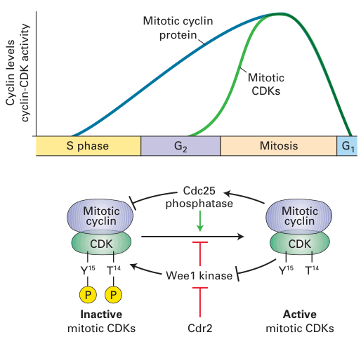
| Cyclin levels | 细胞周期蛋白水平 |
| cyclin-CDK activity | 细胞周期蛋白-CDK活性 |
| Mitotic cyclin | 有丝分裂细胞周期蛋白 |
| cyclin | 细胞周期蛋白 |
| Mitosis | 有丝分裂 |
| S phase | S期 |
| mitotic CDKs | 有丝分裂CDK |
| Wee1 kinase | Wee1激酶 |
| Active | 有活性 |
| Inactive | 无活性 |
有丝分裂CDK的激活是Wee1迅速失活和Cdc25激活的结果。这种快速转换的核心是反馈回路：有丝分裂CDK激活Cdc25并抑制Wee1（见图19-18）。有丝分裂CDK对Cdc25的磷酸化刺激其磷酸酶活性；有丝分裂CDK对Wee1的磷酸化抑制其激酶活性。正在进行的DNA复制抑制Cdc25活性。DNA复制完成后这一正反馈回路如何启动，是我们知之甚少的一个关键问题。有人提出，在细胞周期中较早发挥作用的CDK启动了这一正反馈回路。
尽管有丝分裂CDK骤然激活如何启动尚不清楚，但可以肯定的是，这些蛋白激酶一旦活化，就会启动使细胞为染色体分离做好准备所需的全部事件。有丝分裂CDK的激活与这些激酶亚细胞定位的改变相关。有丝分裂CDK最初与中心体结合，人们认为它们在那里促进中心体成熟。随后它们进入细胞核，在那里引起染色体凝缩和核膜解体。接下来，我们讨论有丝分裂CDK如何协调完成有丝分裂的各个步骤。
在DNA复制起始过程中，S期CDK与DDK共同促进MCM解旋酶激活。与此类似，有丝分裂CDK与其他蛋白激酶协作来完成有丝分裂事件。Polo激酶家族对有丝分裂纺锤体形成以及染色体分离都至关重要。Aurora激酶家族在有丝分裂纺锤体形成中，以及在确保染色体以正确方式附着到有丝分裂纺锤体、从而在有丝分裂中被准确分离方面，发挥关键作用。它们对各项有丝分裂事件的贡献也将予以讨论。
有丝分裂CDK促进核膜解体
在分裂间期，染色体被核膜包围。使有丝分裂纺锤体成核的中心体位于细胞质中。为使染色体能与中心体成核形成的微管相互作用，核膜必须解体。
核膜是内质网的双层膜延伸，其上含有许多核孔复合物（见图1-12、13-33和1-15）。内核膜的脂双层与核纤层相连，核纤层是紧贴核膜内侧面的核纤层蛋白丝网架（图19-19；另见图1-15）。脊椎动物细胞中的三种核纤层蛋白（A、B和C）属于一类细胞骨架蛋白——中间丝，它们对支撑细胞膜至关重要。G2末期有丝分裂CDK一旦被激活，就会磷酸化所有三种核纤层蛋白中的特定丝氨酸残基。这种磷酸化导致核纤层蛋白中间丝解聚。
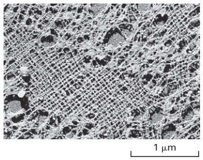
核纤层蛋白解聚导致核纤层崩解，并促成核膜解体。
有丝分裂CDK还影响其他核膜组分。CDK磷酸化特定的核孔蛋白，这导致核孔复合物在前期待解离成亚复合物。内核膜整合膜蛋白的磷酸化被认为会降低它们对染色质的亲和力，并进一步促成核膜解体。内核膜蛋白与核纤层及染色质之间结合的减弱，使内核膜片层能够回缩进入与核外膜相连的内质网中。
有丝分裂CDK促进有丝分裂纺锤体形成
有丝分裂CDK的一项关键功能是诱导有丝分裂纺锤体（又称有丝分裂器）的形成。正如我们在第18章所见，有丝分裂纺锤体由微管组成，这些微管通过染色体上称为动粒的特化蛋白结构附着到染色体上。在大多数生物中，有丝分裂纺锤体由中心体（有时称为纺锤体极体）组织。中心体含有一种特化的微管蛋白——γ微管蛋白，它与相关蛋白一起使微管成核。以中心体为基础的纺锤体组装机制有两个显著例外：高等植物和后生动物的卵母细胞。在这些细胞中，微管的(−)端相互交联，微管自我组装成纺锤体。
有丝分裂纺锤体的功能是分离染色体，使姐妹染色单体彼此分开并被移向细胞的两极（见图18-38）。为实现这一点，有丝分裂纺锤体必须附着到染色体上，使每对姐妹染色单体中的一个动粒附着到来自相反纺锤体极的微管上。此时称姐妹染色单体实现了双向定向。接下来，我们描述有丝分裂纺锤体如何形成、染色体如何附着到其上，以及细胞如何纠正错误的附着。
在G1期，细胞含有一个中心体，它充当细胞主要的微管成核中心。有丝分裂纺锤体的形成始于G1-S期转换时中心体的复制。这种复制的机制人们了解甚少，但该过程的核心是中心粒对的复制——中心粒是彼此呈正交排列的短微管。如第18章所述，G1期细胞含有一对中心粒。伴随进入S期并由G1/S期CDK触发，两个中心粒分开，每个中心粒开始长出一个子中心粒（见图18-36）。新中心粒在S期生长并成熟，每个中心粒对开始组装中心体物质，到G2期时两个中心体已经形成。还有几种蛋白激酶已被鉴定出可控制中心体复制。其中最主要的是保守的Polo激酶家族成员Plk4。G1/S期CDK和Plk4如何促进中心体复制尚不清楚，但据认为涉及对多个中心体组分的磷酸化，从而促进它们的复制和生长。我们将会看到，Polo激酶不仅在中心体复制中起关键作用，而且参与有丝分裂的几乎所有方面。
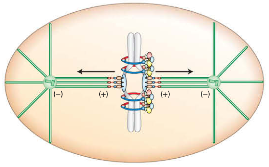
有丝分裂纺锤体形成的关键起始步骤是切断连接两个已复制中心体的纽带。这种中心体分离发生在G2期，由有丝分裂CDK触发（见图18-36）。一旦发生这种分离，微管就从两个中心体伸出，两个中心体在马达蛋白动力蛋白的牵引下彼此移开。微管阵列形成和有丝分裂纺锤体组装的细节已在第18章讨论。这里我们简要考虑染色体如何附着到有丝分裂纺锤体上，以及这一过程中的错误如何被纠正。
为使染色体在有丝分裂中被准确分离，姐妹染色单体对必须稳定地双向定向于有丝分裂纺锤体上（图19-20）。这是如何实现的呢？一旦中心体彼此移开，微管就以"搜索-捕获"机制开始与姐妹染色单体对的动粒相互作用。最初，染色体在马达蛋白的推动下沿微管长度滑行。当染色体到达微管的(+)端时，动粒以端向附着的方式附着到微管上，这是染色体与有丝分裂纺锤体连接的最后构型（图19-21，另见图18-41）。姐妹染色单体的动粒随后结合来自相反纺锤体极的微管。
染色体附着到有丝分裂纺锤体的最终目标是：每一条染色体都以双向定向的方式附着到有丝分裂纺锤体上（又称双极附着，amphitelic attachment；图19-22a）。细胞如何"知道"这一点已经发生？对染色体附着的显微分析表明，起初许多染色体以错误的方式附着到微管上。一个动粒可以附着到来自两极的微管上，这种情况称为错向附着（merotelic attachment；图19-22b）。一对姐妹染色单体的动粒可以附着到来自同一极的微管上（共向附着，syntelic attachment；细胞如何"知道"这一点已经发生？对染色体附着的显微分析表明，起初许多染色体以错误的方式附着到微管上。一个动粒可以附着到来自两极的微管上，这种情况称为错向附着（merotelic attachment；图19-22b）。一对姐妹染色单体的动粒可以附着到来自同一极的微管上（共向附着，syntelic attachment；图19-22c），或者只有一个动粒能附着到微管上（单侧附着，monotelic attachment；图19-22d）。显然，这些附着方式没有一种能导致准确的染色体分离。因此，必须存在能够检测并纠正这类错误附着的机制。
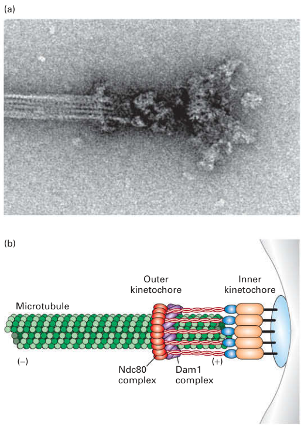
| Microtubule | 微管 |
| kinetochore | 动粒 |
| Inner kinetochore | 内动粒 |
| Outer kinetochore | 外动粒 |
细胞检测错误附着所用的感受机制基于张力。当姐妹染色单体正确附着到微管上时，其动粒处于张力之下（见图19-22a）。附着到动粒上的微管牵拉动粒，而将姐妹染色单体连在一起的黏连蛋白分子承受这些力，从而在动粒处产生张力。错向附着、共向附着或单侧附着会导致动粒处张力不足，使细胞能够将这些错误附着形式与正确的双极附着区分开来。
细胞如何感知动粒是否处于张力之下？蛋白激酶Aurora B及其相关调节因子——合称染色体乘客复合物（CPC）——能感知未处于张力下的动粒，并将这些微管附着切断，使细胞获得第二次纠正附着的机会。这一感受机制的分子基础已部分了解。回想一下，外动粒组分（尤其是Ndc80复合物）结合微管（见图18-41）。Aurora B磷酸化Ndc80。被磷酸化后，该蛋白丧失其微管结合活性。Aurora B定位于内动粒。当动粒不处于张力下时，Ndc80与Aurora B十分接近，该蛋白激酶便可磷酸化该蛋白，使任何动粒-微管附着去稳定（见图19-22b–d）。当微管正确附着到动粒上时，微管的作用力将Ndc80拉离Aurora B，该激酶便无法再磷酸化Ndc80（见图19-22a）。蛋白磷酸酶1（PP1）定位于外动粒，并持续使Ndc80去磷酸化。因此，当动粒处于张力之下并被拉离Aurora B时，Ndc80会被PP1迅速去磷酸化，微管-动粒附着因而得以稳定。
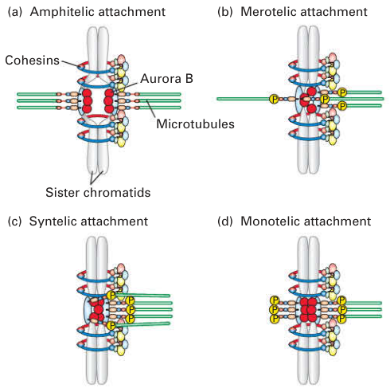
| Amphitelic attachment | 双极附着 |
| Merotelic attachment | 错向附着 |
| Syntelic attachment | 共向附着 |
| Monotelic attachment | 单侧附着 |
| Microtubules | 微管 |
| Sister chromatids | 姐妹染色单体 |
| Cohesins | 黏连蛋白 |
微管持续牵拉染色体。一旦所有染色体都以双极附着的方式附着到微管上，唯一阻止染色体向两极分离的就是把它们牵制在纺锤体中部的黏连蛋白（见图19-22a）。正如我们将在19.6节看到的，正是这些黏连蛋白被切断才启动了后期染色体分离。
染色体凝缩促进染色体分离
染色体分离不仅需要构建分离染色体的装置，还需要将DNA压缩成便于移动的结构。若试图分离分裂间期细胞中那些长而相互缠绕的DNA-蛋白复合物，会导致DNA断裂，从而丢失遗传物质。为避免这一命运，细胞在前期将染色体压缩成我们通过光学或电子显微镜已熟知的致密结构（图19-23）。
染色体凝缩使染色体长度大幅缩短，在脊椎动物中可达10000倍。压缩过程的第二个关键方面是解开相互缠绕的姐妹染色单体。这一过程称为姐妹染色单体解缠，部分由拓扑异构酶II的解链活性介导，并与凝缩过程相伴进行。
近期研究表明，染色体压缩是通过产生连续的环而实现的，这些环导致在环基部形成纤维（图19-24a）。这些纤维随后被压缩，导致染色体进一步压缩（图19-24b）。这一过程的核心是称为凝缩蛋白的蛋白复合物。这一蛋白复合物与DNA复制后连接姐妹染色单体的黏连蛋白相关，最初是因其在蛙提取物中促进染色体凝缩的能力而被鉴定的。与黏连蛋白一样，凝缩蛋白由两个大的卷曲螺旋SMC蛋白亚基组成，这些亚基通过其ATP酶结构域与非SMC亚基结合。当细胞中凝缩蛋白功能丧失时，染色体不凝缩，姐妹染色单体的缠结也得不到解开。凝缩蛋白很可能创建了将染色体包装成连续环的染色体内连接。它们与染色体的结合由有丝分裂CDK和Aurora B促成。这两种蛋白激酶磷酸化组蛋白H2A，使凝缩蛋白能够结合染色质。
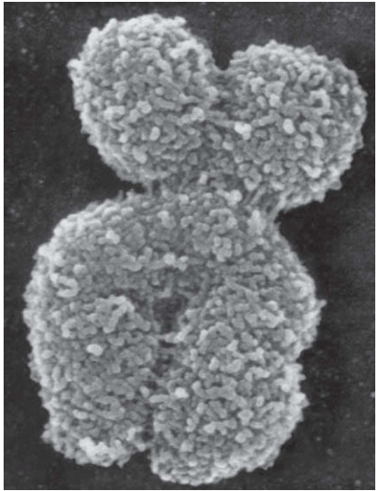
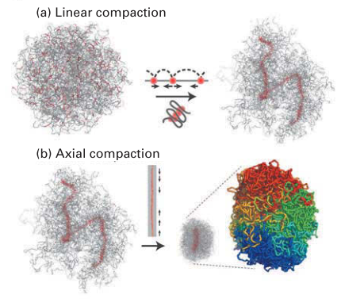
| Linear compaction | 线性压缩 |
| Axial compaction | 轴向压缩 |
最后，黏连蛋白的解离导致染色体进一步压缩。大部分黏连蛋白在前期从染色体上被移除（见图19-17，步骤3）。这一过程由Polo激酶和Aurora B激酶对黏连蛋白的磷酸化介导。在大多数生物中，黏连蛋白仅保留在着丝粒周围。着丝粒周围的黏连蛋白受到蛋白磷酸酶2A（PP2A）的保护，免遭磷酸化依赖性的移除。这种磷酸酶被PP2A靶向因子家族——即Mei-S332/Shugoshin蛋白家族——的一个成员招募到着丝粒区域。受保护的黏连蛋白库提供了对微管牵引力的抵抗，这是在双向定向的动粒处建立张力所必需的。正如我们将在19.8节看到的，这一保护机制在建立减数分裂染色体分离模式中也发挥重要作用。
- 有丝分裂CDK在所有真核生物中诱导进入有丝分裂。
- 在DNA复制完成之前，有丝分裂CDK通过CDK亚基的抑制性磷酸化维持无活性状态。
- 有丝分裂CDK通过正反馈回路促进自身的激活，导致Wee1激酶迅速失活和Cdc25磷酸酶被激活。
- 在大多数真核生物中，有丝分裂CDK通过磷酸化核纤层蛋白诱导核膜解体。
- 中心体复制发生在S期。有丝分裂CDK诱导已复制中心体的分离，从而启动有丝分裂纺锤体的形成。
- 姐妹染色单体通过其动粒以双向定向的方式附着到有丝分裂纺锤体上，其中一个姐妹动粒附着到来自一个纺锤体极的微管上，另一个附着到由另一纺锤体极成核的微管上。
- 细胞通过基于张力的机制感知姐妹染色单体的双向定向。当动粒不处于张力之下时，蛋白激酶Aurora B磷酸化动粒的微管结合亚基，从而降低它们的微管结合亲和力。
- 染色体必须被压缩才能进行分离。
- 凝缩蛋白（与黏连蛋白相关的蛋白复合物）促进染色体凝缩，并被有丝分裂CDK激活。
19.6 有丝分裂的完成：染色体分离与退出有丝分裂
一旦所有染色体都已完成凝缩并正确附着到有丝分裂纺锤体上，染色体分离便开始了。在本节中，我们讨论一种称为分离酶的蛋白酶对黏连蛋白的切割如何触发后期染色体运动，以及这种切割是如何受到调控的。接着我们考察在中期-后期转换时启动黏连蛋白切割的同一套机器——APC/C——如何也启动有丝分裂CDK的失活。随后我们描述在有丝分裂末期被激活的磷酸酶如何参与有丝分裂CDK的失活，从而引起有丝分裂结构的解体以及细胞重置回G1期状态。最后，我们以胞质分裂——即产生两个子细胞的过程——的讨论结束本节。
分离酶介导的黏连蛋白切割启动染色体分离
如前一节所述，中期染色体的每条姐妹染色单体都通过其动粒附着到微管上（见图19-20）。在中期，有丝分裂纺锤体处于张力状态，有力量牵拉两个动粒朝向相反的纺锤体极，但姐妹染色单体并不分开，因为它们通过黏连蛋白在着丝粒处被维系在一起。在迄今分析过的所有生物中，染色体上黏连蛋白的丧失都会触发后期染色体运动。造成染色体上黏连蛋白丧失的机制同样是保守的。一种称为分离酶的蛋白酶切割黏连蛋白亚基Scc1（Rad21），打断连接姐妹染色单体的蛋白环（图19-25）。这一连接一旦被打破，后期便开始了：施加在动粒上的极向力将已分开的姐妹染色单体移向相反的纺锤体极。
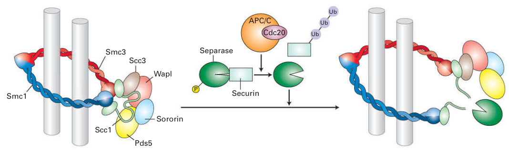
| Ub | 泛素 |
| Separase | 分离酶 |
| Securin | 分离酶抑制蛋白 |
| APC/C | 后期促进复合物（APC/C） |
黏连蛋白的切割是在芽殖酵母中发现的。用Western印迹法分析Scc1亚基显示，从G1期直到中期，该蛋白在聚丙烯酰胺电泳凝胶中按其预测分子量迁移，但在后期，该蛋白在凝胶中迁移得明显更快，表明它以某种方式变小了。随后的研究表明，迁移较快的Scc1形式确实是切割产物。关于负责切割黏连蛋白的蛋白质究竟是哪一种，线索来自对先前鉴定出的、在后期未能分离染色体的酵母突变体的分析。编码Esp1（即我们现在所知的分离酶）的基因的一种突变形式不能产生切割片段。后续分析不仅揭示分离酶是一种蛋白酶，还揭示黏连蛋白的切割对染色体分离是必需的。表达切割位点发生突变的Scc1的细胞无法分离其染色体。鉴于Scc1切割的不可逆性，分离酶活性受到严格控制是绝对必要的。下面我们讨论它的调控。
APC/C通过对分离酶抑制蛋白的泛素化激活分离酶
在后期之前，一种称为分离酶抑制蛋白的蛋白质结合并抑制分离酶（见图19-25）。一旦所有动粒都以正确的双向定向方式附着到纺锤体微管上，由特异性因子Cdc20引导的APC/C泛素连接酶（两者合起来称为APC/CCdc20）就会对分离酶抑制蛋白进行泛素化（注意，这一特异性因子与Cdh1不同，后者在有丝分裂后期和G1期把APC/C的底物导向降解）。多泛素化的分离酶抑制蛋白被蛋白酶体迅速降解，从而释放出分离酶。
在有丝分裂前期，有丝分裂CDK对若干APC/C亚基的磷酸化使APC/CCdc20被磷酸化。然而，这种磷酸化的APC/CCdc20要到所有染色体都在有丝分裂纺锤体上完成双向定向之后才有活性。我们将在19.7节看到，APC/CCdc20受到一条检查点通路的抑制，该通路确保在所有染色体都与有丝分裂装置正确附着之前后期不会启动。Cdc20受到抑制，直到每个动粒都附着到微管上，并且张力已施加到所有姐妹染色单体的动粒上、把它们拉向相反的纺锤体极。在脊椎动物细胞中，分离酶还受到磷酸化的调控。有丝分裂CDK活性在前期和中期抑制分离酶。只有当有丝分裂CDK活性在中期-后期转换时经由APC/CCdc20介导的蛋白质降解而开始下降，分离酶才能变得有活性并触发染色体分离。
黏连蛋白一旦被切割，后期染色体运动便随之发生。如第18章所述，当纺锤体极彼此分开时，染色体分离由微管解聚和马达蛋白介导。有丝分裂CDK活性的下降对这些后期染色体运动很重要。当有丝分裂CDK的失活受到抑制时，后期确实会发生，但它是异常的。一些影响微管动态的微管结合蛋白的去磷酸化似乎对这一过程很重要。在芽殖酵母中，这种去磷酸化由蛋白磷酸酶Cdc14完成；正如我们将看到的，Cdc14在细胞周期的最后阶段——退出有丝分裂——中起关键作用。
有丝分裂CDK的失活触发退出有丝分裂
后期纺锤体伸长以及与退出有丝分裂相关的事件——有丝分裂纺锤体解体、染色体去凝缩和核膜重新形成——都是由CDK底物的去磷酸化引起的。换句话说，退出有丝分裂可以视为进入有丝分裂的逆转。触发各个有丝分裂事件的磷酸化事件必须被撤销，细胞才能回到G1期状态。
有丝分裂CDK底物的去磷酸化是由有丝分裂CDK的失活引起的。在大多数生物中，有丝分裂CDK的失活由APC/CCdc20介导的有丝分裂细胞周期蛋白降解所触发。有丝分裂CDK在激活APC/CCdc20的同时，也启动了自己的覆灭。在芽殖酵母中，只有约50%的有丝分裂细胞周期蛋白被APC/CCdc20降解。我们将在19.7节看到，一部分有丝分裂细胞周期蛋白受到保护而不受APC/CCdc20作用，以便有足够的时间把有丝分裂纺锤体精确地定位在细胞内。一部分有丝分裂细胞周期蛋白如何受到保护而不受APC/CCdc20作用尚不清楚，但很清楚的是，退出有丝分裂的发生需要有第二个使有丝分裂CDK失活的步骤。保守的蛋白磷酸酶Cdc14完成了有丝分裂CDK抑制的这第二个步骤。
在芽殖酵母中，有丝分裂CDK的完全失活需要有APC/CCdh1对有丝分裂细胞周期蛋白的破坏以及CDK抑制蛋白Sic1的积累；回想一下，Sic1一直牵制着S期CDK，直到细胞进入细胞周期。APC/CCdh1和Sic1都受到有丝分裂CDK的抑制。反过来，APC/CCdh1和Sic1也抑制有丝分裂CDK（图19-26）。蛋白磷酸酶Cdc14在后期在这两种相互拮抗的状态之间扳动开关。Cdc14在细胞周期的大部分时间里保持失活，但在后期被一条称为有丝分裂退出网络的GTP酶信号通路激活。正如我们将在19.7节看到的，这一信号级联对纺锤体位置作出响应，只有在后期纺锤体正确定位于细胞内时才有活性。Cdc14在后期一旦被激活，就对APC/CCdh1和Sic1去磷酸化，分别促进有丝分裂细胞周期蛋白降解和有丝分裂CDK失活。这一过程导致退出有丝分裂。
在脊椎动物中，磷酸酶活性对退出有丝分裂也是必需的。仅仅使有丝分裂CDK失活不足以触发及时的退出有丝分裂。目前尚不清楚是哪种磷酸酶对CDK底物去磷酸化从而把细胞重置到G1期。蛋白磷酸酶1和蛋白磷酸酶2A都与这一过程有关。
最终，有丝分裂CDK磷酸化的逆转把许多蛋白质的活性变回其分裂间期状态。凝缩蛋白、组蛋白H1和其他染色质结合蛋白的去磷酸化导致末期有丝分裂染色体的去凝缩。其去磷酸化对有丝分裂纺锤体解体很重要的CDK靶标尚不清楚，但很可能有多个蛋白质是靶标。关于核膜如何重新形成，人们了解得更多。去磷酸化的内核膜蛋白被认为会再次结合到染色质上。因此，含有这些蛋白的ER膜区域的多个突起被认为会与去凝缩染色体的表面结合，然后在一种未知机制的引导下彼此融合，在每条染色体周围形成连续的双层膜（图19-27）。核孔亚复合体的去磷酸化使它们能够在ER突起融合后不久重新组装成贯穿内、外膜的完整NPC。驱动大多数核输入和核输出的Ran-GTP（见第13章）既刺激ER突起融合形成子代核膜，也刺激NPC的组装（见图19-27）。Ran-GTP浓度在去凝缩染色体的邻近微环境中最高，因为Ran鸟嘌呤核苷酸交换因子（Ran-GEF）结合在染色质上。因此，膜融合在去凝缩染色体的表面受到刺激。随后，插入了NPC的核膜片层彼此融合，在所有染色体周围形成一层核膜。
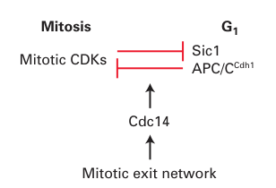
| Mitosis | 有丝分裂 |
| APC/C | 后期促进复合物（APC/C） |
| Mitotic CDKs | 有丝分裂CDK |
| Mitotic exit network | 有丝分裂退出网络 |
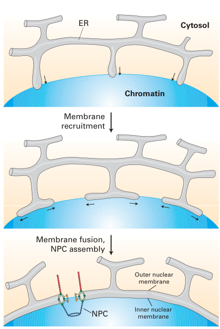
| Membrane recruitment | 膜募集 |
| ER | 内质网 |
| Chromatin | 染色质 |
| NPC | 核孔复合体 |
| Inner nuclear membrane | 内核膜 |
| Outer nuclear membrane | 外核膜 |
| Membrane fusion | 膜融合 |
| NPC assembly | NPC组装 |
| Cytosol | 胞质溶胶 |
胞质分裂产生两个子细胞
当染色体分离完成时，细胞质和细胞器被分配到两个未来的子细胞中。这一过程称为胞质分裂。除高等植物外，细胞的分裂由一个由肌动蛋白和肌动蛋白马达肌球蛋白构成的收缩环完成（见图17-35）。在胞质分裂过程中，该环以类似于肌肉收缩的方式收缩，把膜向内牵拉，最终封闭两个子细胞之间的连接。
胞质分裂必须在空间和时间上与其他细胞周期事件协调一致。要使细胞分裂产生两个子细胞、每个子细胞都含有生存所必需的组分，分裂面必须放置得使每个细胞获得亲本细胞大约一半的细胞质内容和恰好一半的遗传内容。胞质分裂还必须与有丝分裂的完成相协调。下面我们探讨胞质分裂调控的这两个方面。
在动物细胞中，收缩环在后期形成，并被放置在后期纺锤体的中部。这一放置确保每个子细胞获得一半的遗传物质。尽管这种协调很重要，人们对它却了解得少得惊人。一些实验支持这样的观点：从纺锤体中央区（后期纺锤体中已分离的DNA团之间的区域）发送到细胞皮层的信号，对于使胞质分裂的部位与纺锤体位置相协调很重要。另一些研究表明，纺锤体的微管与细胞皮层相互作用，使卵裂沟相对于纺锤体极的位置就位。最可能的情况是，这些通路的组合决定了胞质分裂过程中卵裂沟的形成。
正如我们将在19.7节看到的，细胞演化出了监控机制，确保胞质分裂的部位与纺锤体位置相协调。这在不对称细胞分裂中尤为重要，这种分裂产生大小或命运不同的细胞。这类细胞分裂在发育过程中和干细胞分裂中必不可少（见第21章）。胞质分裂还必须与其他细胞周期事件相协调。胞质分裂的主要信号是有丝分裂CDK的失活。表达稳定化版本有丝分裂细胞周期蛋白的细胞能完成后期，但不进行胞质分裂。胞质分裂机器中的CDK靶标尚未被发现。
至此我们结束了对细胞分裂分子事件的讨论。正如我们已经看到的，细胞周期蛋白依赖性激酶和泛素介导的蛋白质降解处于其调控的中心（图19-28）。下面我们讨论这样一些机制：它们确保在前一个细胞周期阶段完成之前不会启动下一个阶段，并确保每个细胞周期步骤都准确发生。
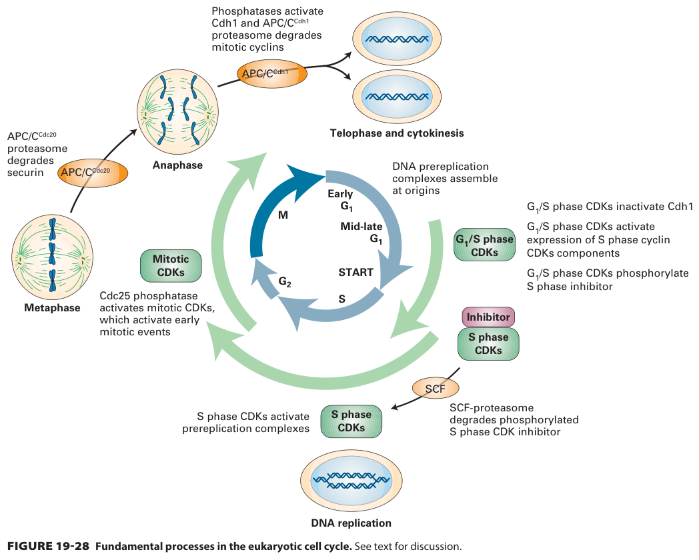
| Metaphase | 中期 |
| Anaphase | 后期 |
| Telophase and cytokinesis | 末期与胞质分裂 |
| G1/S phase | G1/S期 |
| S phase | S期 |
| APC/C | 后期促进复合物（APC/C） |
| proteasome | 蛋白酶体 |
| securin | 分离酶抑制蛋白 |
| mitotic cyclins | 有丝分裂细胞周期蛋白 |
| S phase CDKs | S期CDK |
| mitotic CDKs | 有丝分裂CDK |
| Cdc25 phosphatase | Cdc25磷酸酶 |
| prereplication complexes | 复制前复合体 |
| SCF-proteasome | SCF蛋白酶体 |
- 分离酶对黏连蛋白的切割在后期诱导染色体分离。
- 在后期开始时，APC/C受Cdc20引导对分离酶抑制蛋白进行泛素化，后者随后被蛋白酶体降解。分离酶抑制蛋白的降解激活分离酶。
- 退出有丝分裂由有丝分裂CDK的失活触发，后者主要由有丝分裂细胞周期蛋白降解引起。
- 退出有丝分裂需要Cdc14等蛋白磷酸酶的活性，以去除许多不同蛋白质上的有丝分裂磷酸基团，从而使有丝分裂纺锤体解体、染色体去凝缩和核膜重新组装得以发生。
- 胞质分裂最终完成细胞分裂，并且必须与核分裂的部位相协调。这种协调在进行不对称分裂的细胞中尤为重要。
19.7 细胞周期调控中的监控机制
称为检查点通路的监控机制发挥作用，确保在上一细胞周期事件完成之前不会启动下一个事件。检查点通路由三部分组成：监测某一特定细胞事件的感受器、启动响应的信号级联，以及在必要时中止细胞周期进程并激活修复通路的效应器。受检查点通路监控的细胞周期事件包括生长、DNA复制、DNA损伤、动粒与有丝分裂纺锤体的附着，以及纺锤体在细胞内的定位。这些通路造就了细胞分裂极高的保真性，确保每个子细胞都获得正确数目、准确复制的染色体。它们通过多种机制调控细胞周期蛋白-CDK的蛋白激酶活性：调节细胞周期蛋白的合成与降解、在抑制性位点磷酸化CDK、调节CDK抑制蛋白（CKI）的合成与稳定性使细胞周期蛋白-CDK复合物失活，以及调节APC/C泛素连接酶。
检查点通路建立细胞周期事件间的依赖关系并防止错误发生
导致"监控机制或检查点通路建立细胞周期依赖关系"这一想法的实验十分简单，其解释也极为漂亮（见经典实验19-3）。回忆一下，Lee Hartwell及其同事在酿酒酵母（S. cerevisiae）中分离出温度敏感（ts）的cdc突变体。正是对其中一个cdc突变体的表征，促使Hartwell及其同事提出了检查点通路的概念：检查点通路确保一个细胞周期时相在上一时相完成之前不会开始。除建立依赖关系外，检查点通路还确保染色体复制与分裂的每个环节都准确发生。
如今我们知道，细胞拥有多条检查点通路，而且每条通路的构建方式都相同。感受器检测某个特定细胞过程中的缺陷，并针对该缺陷激活一条信号转导通路。被信号通路激活的效应器启动缺陷的修复，并中止细胞周期进程，直至缺陷被修复。如果缺陷无法修复，检查点通路便诱导凋亡。接下来，我们讨论调控细胞周期进程的主要检查点通路。
生长检查点通路确保细胞只有在大分子生物合成充足后才进入细胞周期
细胞增殖要求细胞通过细胞分裂过程进行增殖，也要求单个细胞通过大分子生物合成而生长。细胞生长与细胞分裂是两个彼此独立的过程，但细胞要在增殖的同时维持恒定的体积，二者就必须紧密协调。例如，当营养受限时，细胞降低生长速率，细胞分裂也必须相应下调。对于生命周期中会经历营养可利用性变化的单细胞生物而言，细胞生长与分裂之间的这种协调尤为重要。因此，存在按生长速率调整细胞分裂速率的监控机制也就不足为奇了。
在芽殖酵母中，细胞生长与分裂在G1期协调。在细胞周期的这一阶段，生长周期与分裂周期通过G1期CDK的活性对细胞生长的依赖而联系起来。生长的哪个方面与细胞周期相关联？使用蛋白质合成抑制剂的经典实验表明，生长速率——因而生长对细胞周期的控制——取决于蛋白质合成。蛋白质合成如何控制G1期CDK活性，是一个正在活跃研究的领域。目前的观点是，一种其丰度受生长速率严格控制的"尺子"蛋白会在细胞的特定区室中积累。当该尺子蛋白达到某一浓度时，它就充当"已达到了进入细胞周期所需的合适细胞大小"的信号。这一细胞大小称为临界细胞大小。在芽殖酵母中，G1期细胞周期蛋白Cln3被认为是尺子蛋白。Cln3受翻译调控，且极不稳定，这使该细胞周期蛋白的水平对蛋白质合成速率格外敏感。Cln3定位于细胞核。人们认为，一旦该蛋白在细胞核中达到临界浓度，图19-12所概括的进入细胞周期过程便随之启动。重要的是，大小控制具有高度可塑性：G1期的长度和临界细胞大小会随营养可利用性而变化。
粟酒裂殖酵母（S. pombe）以杆状细胞生长，随生长而伸长，随后在有丝分裂时从中间一分为二，产生两个大小相等的子细胞（见图19-4）。与主要在G1期生长的芽殖酵母和大多数后生动物细胞不同，这种酵母的大部分生长发生在细胞周期的G2期，其进入有丝分裂受到针对细胞大小的精细调控。回忆一下，进入有丝分裂受蛋白激酶Wee1调控，Wee1通过磷酸化酪氨酸15和苏氨酸14抑制CDK1。当营养受限时，Wee1磷酸化CDK1；因此细胞一直停留在G2期，直至达到进入有丝分裂的临界大小。Cdr2似乎是这种酵母中的尺子蛋白。Cdr2一经合成，便呈斑块状定位于细胞中部的细胞皮层。Cdr2是Wee1的抑制蛋白（见图19-18）。随着细胞生长，细胞中部Cdr2的局部浓度升高，Wee1在Cdr2附近被抑制。事实上，G2期CDK激活起始之处——中心体——就定位在细胞中部、靠近细胞皮层。
在多细胞生物中，营养通常并不受限。相反，细胞生长由生长因子信号通路控制，如Ras、AMPK和TOR通路（见第10章和第16章）。这些通路似乎也对协调细胞生长与分裂十分重要。生长因子信号通路关键组分（如Myc）的突变，会引起果蝇细胞大小的剧烈变化。Myc调控许多对大分子生物合成至关重要的基因的转录，还以更间接的方式调控G1期CDK。因此，这一转录因子似乎整合了细胞生长与分裂。然而，这种协调的具体细节仍有待阐明。
DNA损伤响应系统在DNA受损时中止细胞周期进程
遗传物质的完整、准确复制对细胞分裂至关重要。如果DNA复制不完全或受到其他损伤时细胞就进入有丝分裂，便会产生遗传学改变。在许多情况下，这些改变会导致细胞死亡，但正如我们将在第24章看到的，它们也可能造成遗传学改变，使细胞生长与分裂失去控制，最终导致癌。这一风险因一个发现而凸显：许多参与感知DNA损伤及其修复的蛋白，在人类癌症中频繁发生突变。
复制DNA的酶高度精确，但其精确性并不足以确保DNA合成过程中的完全准确。此外，X射线和紫外线等环境损伤也会造成DNA损伤，而这种损伤必须在细胞进入有丝分裂之前得到修复。细胞配备了一套DNA损伤响应系统，可感知多种不同类型的DNA损伤，并通过激活修复通路、中止细胞周期进程来做出响应，直至损伤被修复。细胞周期停滞可发生在G1期、S期或G2期，取决于DNA损伤发生在进入细胞周期之前还是在DNA复制期间。在多细胞生物中，应对特别严重DNA损伤的策略有所不同。细胞并不试图修复损伤，而是发生程序性细胞死亡，即凋亡——这一机制我们将在第21章详细讨论。
DNA损伤有多种不同形式，严重程度也各不相同。DNA双螺旋的断裂——即双链断裂——也许是最严重的损伤形式，因为如果在存在这种损伤的情况下进入有丝分裂，几乎必然导致DNA丢失。更细微的缺陷包括单链断裂、核苷酸结构改变以及DNA错配。就我们此处的讨论而言，重要的是要注意，细胞对所有这些不同类型的损伤都有感受器。这些感受器扫描基因组，当检测到损伤位点时，便在损伤位点组装信号因子和修复因子。
检测这些不同类型损伤的核心，是一对同源的蛋白激酶ATM（共济失调性毛细血管扩张症突变蛋白）和ATR（共济失调性毛细血管扩张症与Rad3相关蛋白）。这两个蛋白被鉴定并表征，是因为编码它们的基因发生突变会分别导致共济失调性毛细血管扩张症和Seckel综合征。这两种蛋白激酶都被招募到DNA损伤位点。随后，它们启动衔接蛋白以及另一组称为Chk1和Chk2的蛋白激酶的依次招募。在动物中，这些激酶继而激活修复机制，并引起细胞周期停滞或凋亡（图19-29）。ATR和ATM识别不同类型的DNA损伤。ATM非常专一，只对双链断裂做出响应。ATR则能识别更多样的DNA损伤类型，如停滞的复制叉、DNA错配、受损的核苷酸以及双链断裂。ATR之所以能识别这些多样的损伤类型，是因为它们全都含有一定量的单链DNA——或是损伤本身的一部分，或是修复酶在修复过程中生成单链DNA。ATR与单链DNA的结合被认为可激活其蛋白激酶活性，从而招募衔接蛋白，后者的功能是招募并帮助激活Chk1激酶。活化的Chk1随即诱导修复通路并抑制细胞周期进程。
Chk1和Chk2中止细胞周期。这两种蛋白激酶通过磷酸化磷酸酶Cdc25上不同于CDK激活磷酸化位点的位点来抑制Cdc25（见图19-29）。当DNA损伤发生在G1期时，Cdc25A的抑制导致G1/S期CDK和S期CDK受到抑制（图19-30；另见图19-18）。结果，这些激酶无法启动DNA复制。当DNA损伤发生在S期或G2期时，Chk1/2对Cdc25C的抑制导致有丝分裂CDK受到抑制，从而停滞在G2期。活跃的DNA复制也会抑制进入有丝分裂。ATR通过Chk1持续抑制Cdc25C，直至所有复制叉完成DNA复制并解体。这一机制使有丝分裂的启动依赖于染色体复制的完成。最后，细胞还能感知导致复制叉停滞或减慢的DNA复制胁迫。这种胁迫触发ATR-Chk1检查点通路的激活，导致S期CDK活性下调，并阻止晚期复制的起点起始复制。
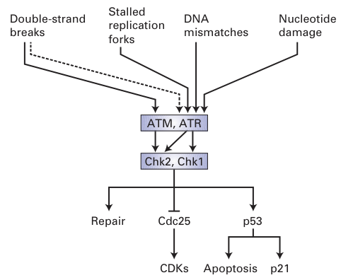
| Repair | 修复 |
| CDKs | CDK |
| Apoptosis | 凋亡 |
| Double-strand breaks | 双链断裂 |
| Stalled replication forks | 停滞的复制叉 |
| DNA mismatches | DNA错配 |
| Nucleotide damage | 核苷酸损伤 |
Chk1介导的对Cdc25家族磷酸酶的抑制，并不是DNA损伤或复制不完全抑制细胞周期进程的唯一机制。正如我们将在下文看到的，DNA损伤导致转录因子p53被激活，p53诱导编码CDK抑制蛋白p21的基因表达。p21结合并抑制所有后生动物细胞周期蛋白-CDK复合物。结果，细胞停滞在G1期和G2期（见图19-30）。
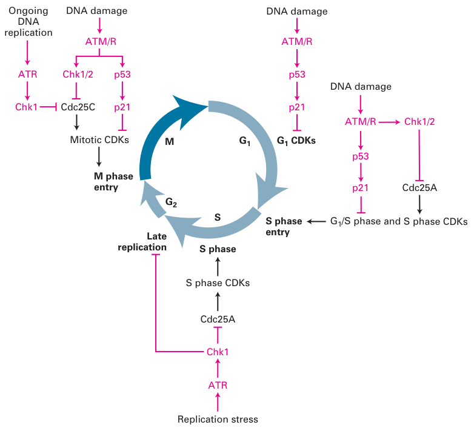
| G1 | G1期 |
| S phase | S期 |
| G2 | G2期 |
| M phase | M期 |
| G1 CDKs | G1期CDK |
| S phase CDKs | S期CDK |
| Mitotic CDKs | 有丝分裂CDK |
| DNA damage | DNA损伤 |
| Replication stress | 复制胁迫 |
| Ongoing DNA replication | 正在进行的DNA复制 |
| Late replication | 晚期复制 |
如上所述，ATM只识别双链断裂（见图19-29）。这种蛋白激酶由称为MRN复合物的复合体直接招募到DNA末端，MRN复合物结合断裂末端并把它们拢在一起。活化的ATM随即磷酸化并激活Chk2，并招募修复蛋白。这些修复蛋白启动同源重组，如第5章所述。该过程涉及产生单链悬垂，这些悬垂又招募并激活ATR及其效应器，进一步增强DNA损伤响应。ATM还能招募一条替代修复通路，使两个双链断裂直接彼此融合，这一修复过程称为非同源末端连接。与ATR一样，活化的ATM也通过Chk2介导的对Cdc25的抑制来中止细胞周期进程，从而阻止CDK被激活。这种抑制可发生在G1期或G2期。
后生动物细胞DNA损伤响应的一个关键效应器是转录因子p53（见图19-29）。它被称为抑癌蛋白，因为其正常功能是在DNA受损时限制细胞增殖。这种蛋白极不稳定，在正常条件下一般不会积累到足以刺激转录的高水平。p53的不稳定性源于它被一种称为Mdm2的泛素连接酶泛素化，随后被蛋白酶体降解。ATM和ATR抑制p53的快速降解，它们在p53的一个位点上磷酸化，从而干扰Mdm2的结合。这一修饰以及p53在响应DNA损伤时的其他修饰，大大增强了它激活特定基因转录的能力，这些基因有助于细胞应对DNA损伤。其中一个基因编码CKI p21（见图19-29）。
在某些情况下，例如DNA损伤广泛时，p53还激活导致凋亡的基因表达——凋亡即程序性细胞死亡过程，在多细胞动物发育过程中通常发生于特定细胞。在后生动物中，p53响应进化出在面对广泛DNA损伤时诱导凋亡的能力（见第21章），推测是为了防止多种突变累积，以免把正常细胞变成癌细胞。p53在细胞周期停滞和诱导凋亡中的双重作用，或许可以解释这样一个观察：几乎所有癌细胞在p53基因的两个等位基因上、或在响应DNA损伤而稳定p53的通路上都带有突变（见第24章）。p53、ATM和Chk2突变的后果，为细胞周期检查点通路对多细胞生物健康的重要意义提供了生动的例证。
纺锤体组装检查点通路在染色体准确附着到有丝分裂纺锤体之前阻止染色体分离
纺锤体组装检查点通路阻止进入后期，直至每一条染色单体的每一个动粒都正确附着到纺锤体微管上。哪怕只有一个动粒未附着或未处于张力之下，后期也会被抑制，因为如果在存在这种缺陷的情况下进入有丝分裂，几乎必然导致染色体丢失。为此，细胞拥有一套监控机制，在存在无张力或未附着的动粒时阻止进入后期。纺锤体组装检查点通路识别未附着的动粒。然而，正如我们在19.5节看到的，姐妹染色单体的动粒常常附着到来自同一极的微管（同向附着），或者单个动粒附着到源自两个不同极的微管（错向附着）。这类错误附着是如何被识别的？张力不足的微管-动粒相互作用会被Aurora B对动粒微管结合组分Ndc80复合物的磷酸化所去稳定。这导致产生未附着的动粒，随后被纺锤体组装检查点通路识别。通过这种方式，Aurora B与纺锤体组装检查点通路在每个细胞周期中协同作用，以正确的双向定向方式把每一对姐妹染色单体准确地附着到有丝分裂纺锤体上。
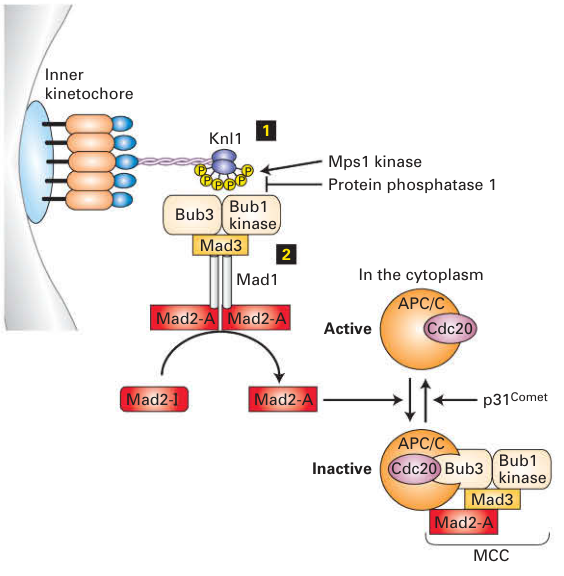
| Inner kinetochore | 内侧动粒 |
| Mps1 kinase | Mps1激酶 |
| Bub1 kinase | Bub1激酶 |
| Mad2-A | 活化型Mad2 |
| Mad2-I | 失活型Mad2 |
| Protein phosphatase 1 | 蛋白磷酸酶1 |
纺锤体组装检查点通路的组分结合到动粒上未被占据的微管结合位点，并产生一个后期抑制信号，最终抑制APC/CCdc20。回忆一下，APC/CCdc20介导的对分离酶抑制蛋白的泛素化及其随后的降解，是激活分离酶并进入后期所必需的（见图19-25）。当一个动粒未附着到微管时，外侧动粒组分Knl1被纺锤体组装检查点通路的激酶Mps1磷酸化（图19-31）。这一磷酸化随即把其他检查点通路组分招募到未附着的动粒上。对于关闭APC/CCdc20至关重要的是，未附着的动粒招募并激活Mad1-Mad2复合物。重要的是，活化的Mad1-Mad2复合物能把细胞质中无活性的Mad2分子转变为一种能够结合并抑制APC/CCdc20的活性构象。结合到APC/CCdc20上的Mad2又招募更多的检查点因子到该复合物上，形成有丝分裂检查点复合物（MCC）。MCC随即阻止APC/CCdc20识别并泛素化底物。这一关于纺锤体组装检查点通路的精巧模型，可以解释为何单个未附着的动粒就能抑制细胞中所有的Cdc20，直至该动粒与纺锤体微管正确结合。
一旦所有染色体都以正确的双向附着方式连接到有丝分裂纺锤体上，纺锤体组装检查点通路就必须被沉默，以便APC/CCdc20降解分离酶抑制蛋白并启动后期。纺锤体组装检查点通路的沉默通过多种机制实现。蛋白磷酸酶1使Knl1去磷酸化，从而消除动粒上的检查点蛋白结合位点。此外，一种称为p31comet的蛋白使MCC解体，从而激活APC/CCdc20（见图19-31）。
纺锤体组装检查点通路对小鼠的存活力是必需的，这凸显了这一质量控制通路在每次细胞分裂中的重要性。如果一条已复制染色体的两个动粒尚未都附着到来自相反纺锤体极的微管，后期就启动了，染色体便会被错误分离，这一过程称为不分离。由此产生的状况——细胞丢失或获得整条染色体——称为非整倍性。非整倍性对人类健康和适合度有深远影响。它导致基因调控失常，并可促进癌症发生。当不分离发生在产生人类卵或精子的减数分裂过程中时，结果可能是三体性（获得一条染色体）或单体性（丢失一条染色体）。正如我们将在19.8节看到的，减数分裂特别容易发生不分离，这可导致自然流产或唐氏综合征。■
纺锤体位置检查点通路确保细胞核在两个子细胞之间被准确分配
核分裂位点与胞质分裂位点的协调，对于产生两个完全相同的子细胞至关重要。如果胞质分裂的方式使得每个子细胞都未能获得完整的遗传互补，就会导致染色体的丢失或获得。许多模式系统都描述了一种在纺锤体未正确定位于细胞中时阻止胞质分裂的监控机制。这种称为纺锤体位置检查点通路的监控机制，在芽殖酵母中了解得最为清楚。在这种生物中，芽体形成的位点——因而也是胞质分裂的位点——在G1期就已确定。因此，分裂轴在有丝分裂之前就已规定，每次细胞分裂时纺锤体都必须沿这条亲本-芽体轴排列（图19-32，步骤1）。当这一过程失败时，纺锤体位置检查点阻止有丝分裂CDK失活，使细胞有机会在纺锤体解体和胞质分裂之前重新定位纺锤体（图19-32，步骤2）。如果纺锤体位置检查点失效，纺锤体错位的细胞就会产生核过多或过少的丝裂产物（图19-32，步骤3）。
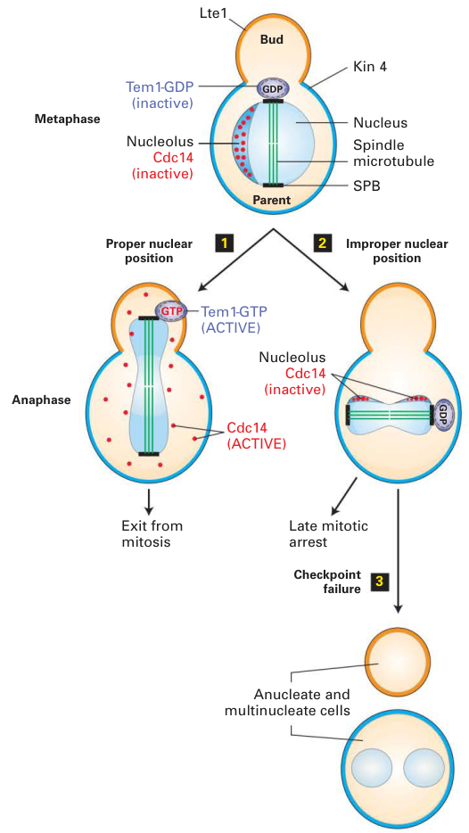
| Exit from mitosis | 退出有丝分裂 |
| Late mitotic arrest | 有丝分裂晚期停滞 |
| Bud | 芽体 |
| Nucleolus | 核仁 |
| Cdc14 (inactive) | 失活型Cdc14 |
| Cdc14 (ACTIVE) | 活化型Cdc14 |
| Anucleate and multinucleate cells | 无核与多核细胞 |
| SPB | 纺锤体极体（SPB） |
| Tem1-GDP (inactive) | Tem1-GDP（失活型） |
| Tem1-GTP (ACTIVE) | Tem1-GTP（活化型） |
| Proper nuclear position | 核位置正确 |
| Improper nuclear position | 核位置异常 |
| Metaphase | 中期 |
| Anaphase | 后期 |
| Checkpoint failure | 检查点失效 |
回忆一下，在芽殖酵母中，一部分有丝分裂细胞周期蛋白免于被APC/CCdc20降解，以便完成有时颇为困难的过程：把有丝分裂纺锤体排列成某种方式，使半个细胞核在后期纺锤体伸长时能挤过狭窄的芽颈。再回忆一下，对这池受保护的有丝分裂细胞周期蛋白-CDK复合物的失活，由蛋白磷酸酶Cdc14触发，而Cdc14又由一条称为有丝分裂退出网络的信号转导通路激活（见图19-26）。有丝分裂退出网络受一种称为Tem1的小型（单体）GTP酶控制。这种开关蛋白GTP酶超家族成员控制一条蛋白激酶级联的活性，其方式类似于Ras控制MAP激酶通路（见第16章）。Tem1在纺锤体极体一形成就与之结合。一种称为Kin4的GTP酶抑制蛋白定位在亲本细胞中，但不存在于芽体中（见图19-32）。一种称为Lte1的Kin4抑制蛋白定位在芽体中，但不存在于亲本细胞中；它抑制任何漏进芽体的残余Kin4。当后期末端的纺锤体微管伸长把正在分离的子代染色体正确地定位在芽体中时，Tem1便从Kin4的抑制中释放出来。结果是，Tem1转变为与GTP结合的活性状态，激活蛋白激酶信号级联。级联中的末端激酶随即磷酸化那个结合并抑制Cdc14的核仁锚定蛋白，把Cdc14磷酸酶释放到芽体和亲本细胞的细胞质与核质中（见图19-32，步骤1）。一旦有了活化的Cdc14，有丝分裂CDK便被失活，细胞退出有丝分裂。当纺锤体未能正确定位时，携带Tem1的纺锤体极体无法进入芽体，有丝分裂退出网络不能被激活，细胞便停滞在后期。因此，信号转导通路的抑制蛋白和激活蛋白在空间上的分隔，使细胞能够感知空间线索——纺锤体位置——并将其转化为对信号转导通路的调控。
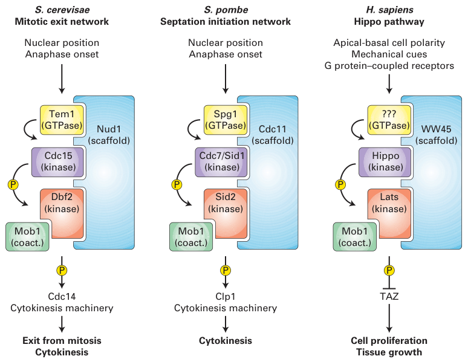
| Nuclear position | 核位置 |
| Anaphase onset | 后期启动 |
| Cytokinesis machinery | 胞质分裂机器 |
| Tem1 (GTPase) | Tem1（GTP酶） |
| Nud1 (scaffold) | Nud1（支架蛋白） |
| Cdc15 (kinase) | Cdc15（激酶） |
| Dbf2 (kinase) | Dbf2（激酶） |
| Mob1 (coact.) | Mob1（辅激活蛋白） |
| Exit from mitosis | 退出有丝分裂 |
| Spg1 (GTPase) | Spg1（GTP酶） |
| Cdc11 (scaffold) | Cdc11（支架蛋白） |
| Sid2 (kinase) | Sid2（激酶） |
| Apical-basal cell polarity | 顶端-基底细胞极性 |
| G protein–coupled receptors | G蛋白偶联受体 |
| Mitotic exit network | 有丝分裂退出网络 |
| Septation initiation network | 隔膜起始网络 |
| Hippo pathway | Hippo通路 |
| S. cerevisiae | 酿酒酵母 |
| S. pombe | 粟酒裂殖酵母 |
| H. sapiens | 人类 |
| WW45 (scaffold) | WW45（支架蛋白） |
| Hippo (kinase) | Hippo（激酶） |
| Lats (kinase) | Lats（激酶） |
| Cell proliferation | 细胞增殖 |
| Tissue growth | 组织生长 |
定位于纺锤体极体、其活性受纺锤体位置调控的有丝分裂退出网络，属于一类信号通路：在后生动物中称为Hippo通路，在裂殖酵母中称为隔膜起始网络（图19-33）。这条通路由一个高度保守的核心激酶信号网络组成，但其信号输入和输出在进化过程中已经分化。Hippo信号通路的保守核心由Hippo蛋白激酶组成，后者激活Lats-Mob1激酶。这些激酶由一个支架分子组织起来该支架分子至少在芽殖酵母和裂殖酵母中把激酶级联靶向到中心体。与许多激酶信号级联一样，一种GTP酶控制有丝分裂退出网络和隔膜起始网络的活性。Hippo通路是否受GTP酶控制，目前尚不清楚。
Hippo通路是信号通路在进化过程中被重新利用的一个绝佳例子。在芽殖酵母和裂殖酵母中，这条通路响应后期和核位置信号，调控CDK活性与胞质分裂。在后生动物中，Hippo通路在G1期限制细胞增殖。Hippo通路失活会导致组织过度生长，因为在缺乏Hippo通路功能时，转录激活因子TAZ（在小鼠中称为YAP）会持续促进生长与增殖促进基因的表达。控制Hippo通路功能的信号似乎多种多样。经由细胞连接组分的顶端-基底细胞极性、G蛋白偶联受体以及机械力，都能激活Hippo通路，从而引起G1期停滞。顶端-基底极性是分化上皮片层的特征。这些极性线索调控Hippo通路的确切机制是一个活跃研究的领域，肌动蛋白细胞骨架似乎是这一控制中的核心节点。细胞连接、机械力和G蛋白偶联受体都控制肌动蛋白细胞骨架及其调控因子，如rho GTP酶。
鉴于Hippo通路在增殖控制中的核心作用，它在干细胞维持和组织再生中扮演关键角色也就不足为奇了。事实上，这条通路最初被发现，就是因为Hippo通路的突变会导致果蝇组织过度生长和器官增大。它在限制生长中的核心功能也意味着，这条通路对于防止肿瘤发生至关重要。携带Hippo通路突变的小鼠易患癌症，而且在人类癌症中频繁观察到TAZ水平升高。
至此我们结束了对监控机制的讨论，这些机制确保细胞周期进程向前推进且不发生错误。正如我们将在第24章看到的，癌是一种细胞周期监控失败的疾病。确保染色体准确复制、分离和核分配的各类通路发生突变，是癌性转化的重要原因。
- 称为检查点通路的监控机制在细胞周期事件之间建立依赖关系，并确保下一个细胞周期事件不会在上一事件完成之前发生。
- 检查点通路由监测某一特定细胞事件的感受器、一条信号通路，以及一个在必要时中止细胞周期进程并激活修复通路的效应器组成。
- 在大多数生物中，生长与细胞分裂在G1期被整合起来。大分子生物合成减少会延迟进入细胞周期。
- 细胞能够检测并响应多种多样的DNA损伤，其响应因细胞所处的细胞周期阶段而异。
- 响应DNA损伤时，两种相关的蛋白激酶ATM和ATR被招募到损伤位点，在那里激活通向细胞周期停滞、修复以及在某些情况下凋亡的信号通路。
- 阻止后期过早启动的纺锤体组装检查点通路利用Mad2和其他蛋白调控APC/CCdc20，后者把分离酶抑制蛋白和有丝分裂细胞周期蛋白作为泛素化的靶标。
- 当纺锤体位置异常时，纺锤体位置检查点通路阻止有丝分裂CDK失活。在这条通路中，定位化的激活蛋白和抑制蛋白，以及一个在两者之间穿梭的感受器，使细胞得以感知纺锤体位置。
- Hippo家族信号转导通路在进化过程中被重新利用。在真菌中，它协调退出有丝分裂和胞质分裂与染色体分离；在后生动物中，这一功能已被协调组织生长与组织构筑所取代。
19.8 减数分裂：一种特殊的细胞分裂类型
在几乎所有二倍体真核生物中，减数分裂产生单倍体生殖细胞（卵和精子），后者随后可与另一个体的生殖细胞融合，产生二倍体受精卵，再发育成新的个体。减数分裂是所有真核生物生物学与进化的一个基本方面，因为它使个体从双亲获得的染色体组发生重新组合。减数分裂期间亲本DNA分子之间的染色体重新组合与同源重组，保证了产生的每一个单倍体生殖细胞都会获得独特的等位基因组合，这一组合既不同于每一个亲本，也不同于其他任何已形成的单倍体生殖细胞。
减数分裂的机制与有丝分裂类似。然而，减数分裂的几个关键特征使这一过程能够产生遗传上多样的单倍体细胞（见图6-3）。在有丝分裂细胞周期中，每个S期之后都跟着染色体分离与细胞分裂。相反，在减数分裂过程中，一轮DNA复制之后跟着两个连续的染色体分离阶段。这一过程导致形成单倍体而非二倍体的子细胞。在这两个分裂阶段中，母源与父源染色体被重新洗牌并分配，使子细胞的遗传组成不同于亲本细胞。在本节中，我们讨论有丝分裂与减数分裂之间的相似性，以及那些改造经典有丝分裂细胞周期机器、使之产生导致单倍体子细胞形成的异常细胞分裂的减数分裂特异性机制。
细胞外与细胞内信号调控生殖细胞的形成
在后生动物中，触发进入减数分裂的信号是一个非常活跃的研究领域，仍有许多未知之处。然而，在所有已研究过这一转换的生物中，决定进入减数分裂程序都遵循相同的基本原则。细胞外信号诱导一个转录程序，产生减数分裂特异性的细胞周期因子，从而引发异常的减数分裂。细胞周期的这一修饰与一个发育程序相伴而行，该程序诱导配子特有的特征，如精子鞭毛的发育，或真菌孢子形成过程中抗逆细胞壁的产生。在哺乳动物中，诱导进入减数分裂的细胞外信号至少有一种是视黄酸，这是一种信号分子，通过与转录因子视黄酸受体（RAR）结合，在许多不同的发育过程中发挥作用（见图9-43）。这一激素的细胞靶标，以及它如何发挥作用以指定减数分裂命运，仍有待发现。
在酿酒酵母中，进入减数分裂这一决定的分子机制已被很好地理解。进入减数分裂的决定在G1期作出。氮源和碳源的耗竭诱导二倍体细胞进行减数分裂而非有丝分裂，产生单倍体孢子（见图1-23）。在减数分裂期间，出芽受到抑制。因此，减数分裂前的S期和两次减数分裂都发生在亲本细胞的范围内。随后，在四个减数分裂产物周围产生孢子壁。回忆一下，出芽和DNA复制的起始是由G1/S期CDK诱导的。要阻止出芽，它们的表达必须被抑制。营养饥饿抑制G1/S期细胞周期蛋白的表达，从而抑止出芽。然而，DNA复制也依赖G1/S期CDK。在没有G1/S期CDK的情况下，减数分裂前的DNA复制如何发生？孢子形成特异性的蛋白激酶Ime2接管了G1/S期CDK促进DNA复制的作用。Ime2促进：（1）APC/C特异性因子Cdh1的磷酸化，使其失活，从而使S期和M期细胞周期蛋白得以积累（见图19-13）；（2）转录因子的磷酸化，以诱导S期所需基因产物的表达，包括DNA聚合酶和S期细胞周期蛋白（见图19-14）；（3）S期CDK抑制蛋白Sic1的磷酸化，导致活性S期CDK的释放和减数分裂前DNA复制的启动。
几个关键特征将减数分裂与有丝分裂区分开来
减数分裂在几个基本方面与有丝分裂不同。这些差异总结于图19-34。在减数分裂过程中，一轮DNA复制之后跟着两个细胞分裂周期，分别称为减数分裂I和减数分裂II（图19-35）。减数分裂II与有丝分裂相似，都分离姐妹染色单体。然而，减数分裂I则非常不同。在这一分裂中，被分离的是同源染色体——即从母亲遗传来的染色体和从父亲遗传来的同一条染色体。这种异常的染色体分离需要对染色体分离机器进行三处减数分裂特异性修饰。在下文中，我们讨论这些修饰，并解释为什么需要它们。
在有丝分裂中负责将染色体准确附着到纺锤体上的张力感受机制，在减数分裂I中也负责染色体的分离。因此，同源染色体必须彼此连接，这一张力机制才能发挥作用。同源染色体之间的同源重组建立了这些连接（见图19-34）。同源重组的分子机制将在第4章详细讨论。这里我们只讨论同源重组对减数分裂成功进行的重要性。
在减数分裂I的G2期和前期，每条已复制染色体的两条染色单体由黏连蛋白复合体沿染色体臂全长连接在一起，与有丝分裂细胞周期中DNA复制后的情况一样。在减数分裂I前期，同源染色体（即母源与父源的1号染色体、母源与父源的2号染色体等）彼此配对并进行同源重组。重要的是，母源与父源染色体之间至少发生一次重组事件。重组产生的染色单体交叉互换，可在第一次减数分裂前期和中期用显微镜观察到，这种结构称为交叉（单数chiasma）。相反，在有丝分裂中同源染色体之间不发生配对，非姐妹染色单体之间的重组也很罕见。与同源重组同时发生的是，同源染色体彼此结合，这一过程称为联会。在大多数生物中，这种联会由一种称为联会复合体（SC）的蛋白质性复合体介导。通过交叉连接起来的同源染色体称为二价体（见图19-34）。交叉以及其远端的黏连蛋白分子，为中期I纺锤体上微管施加的拉力提供了阻力（见图19-35）。
减数分裂I前期发生的同源染色体之间的重组至少有两个功能性后果：第一，它在减数分裂I中期把同源染色体连接起来。第二，它通过确保新的等位基因组合出现在不同个体中，从而促进一个物种内个体之间的遗传多样性。（然而请注意，遗传多样性主要来自减数分裂期间母源与父源同源物的独立重新组合。）现在至少通过一个交叉连接起来的同源物，必须在减数分裂I中期的纺锤体上排列整齐，以便在减数分裂I后期母源与父源染色体彼此分离。这要求姐妹染色单体的动粒附着到从同一纺锤体极发出的微管上，而不是像有丝分裂中那样附着到来自相反纺锤体极的微管上（图19-36）。以这种方式附着的姐妹染色单体被称为同向定向。然而，每个二价体中母源与父源染色体的动粒则附着到来自相反纺锤体极的纺锤体微管上；它们是双向定向的。
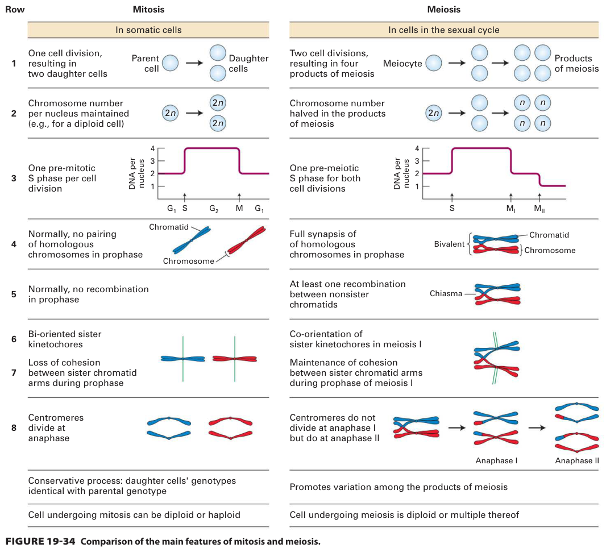
| Mitosis | 有丝分裂 |
| Meiosis | 减数分裂 |
| Meiocyte | 减数分裂细胞 |
| Parent cell | 亲本细胞 |
| Daughter cells | 子细胞 |
| Chromosome | 染色体 |
| Chromatid | 染色单体 |
| Bivalent | 二价体 |
| Chiasma | 交叉 |
| Anaphase I | 后期I |
| Anaphase II | 后期II |
| Centromeres | 着丝粒 |
| Bi-oriented sister kinetochores | 双向定向的姐妹动粒 |
| Co-orientation of sister kinetochores in meiosis I | 减数分裂I中姐妹动粒的同向定向 |
最后，为了便于进行两个连续的染色体分离阶段，黏连蛋白必须以分步方式从染色体上丢失。回忆一下，在有丝分裂中，所有黏连蛋白在后期开始时就已经丢失（图19-37a）。相反，在减数分裂中，黏连蛋白在减数分裂I结束时从染色体臂上丢失，但动粒周围的一池黏连蛋白受到保护而不被移除（图19-37b）。这一池黏连蛋白在整个减数分裂I期间持续存在，但在后期II开始时被移除。正如我们接下来将看到的，同源染色体要在减数分裂I期间彼此分离，必须从染色体臂上丢失黏连蛋白。
减数分裂中移除黏连蛋白的机制与有丝分裂中相同。分离酶抑制蛋白的降解释放出分离酶，后者随即切割那些把染色体臂连在一起的黏连蛋白，但使着丝粒周围的黏连蛋白保持完整。这使已重组的母源与父源染色体得以分开，但每一对染色单体仍在着丝粒处保持连接。在中期II，姐妹染色单体在中期II纺锤体上排列整齐，分离酶再次被激活，切割着丝粒周围的残余黏连蛋白，促进后期II的进行（见图19-37b）。
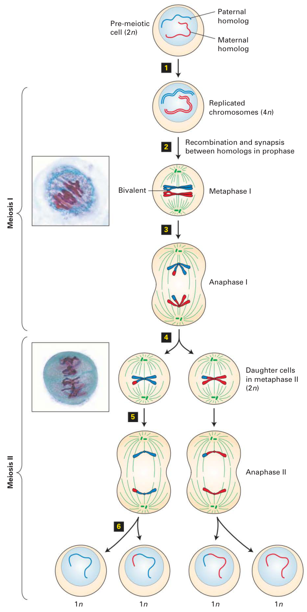
| Pre-meiotic cell | 减数分裂前细胞 |
| Replicated chromosomes | 已复制的染色体 |
| Paternal homolog | 父源同源物 |
| Maternal homolog | 母源同源物 |
| Recombination and synapsis between homologs in prophase | 前期同源物之间的重组与联会 |
| Daughter cells in metaphase II | 中期II的子细胞 |
| Bivalent | 二价体 |
| Metaphase I | 中期I |
| Anaphase I | 后期I |
| Anaphase II | 后期II |
| Meiosis I | 减数分裂I |
| Meiosis II | 减数分裂II |
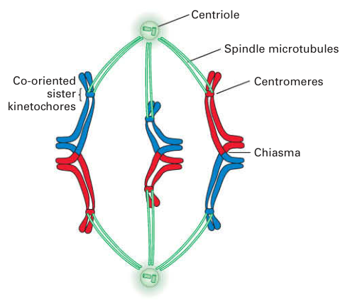
| Centriole | 中心粒 |
| Spindle microtubules | 纺锤体微管 |
| Centromeres | 着丝粒 |
| Chiasma | 交叉 |
| Co-oriented sister kinetochores | 同向定向的姐妹动粒 |
重组与减数分裂特异性黏连蛋白亚基是减数分裂I中特化染色体分离所必需的
正如我们已经看到的，在减数分裂I中期，一条（已复制的）染色体中的两条姐妹染色单体都附着到从同一纺锤体极发出的微管上，而不是像有丝分裂中那样附着到来自相反两极的微管上（见图19-36）。同源染色体之间的两条物理连接在后期之前抵抗纺锤体的拉力：（1）染色单体之间交叉互换产生的交叉，以及（b）交叉点远端的黏连蛋白（见图19-37b，上图）。重组在减数分裂中具有连接功能的证据来自以下观察：当重组因对该过程必需的蛋白发生突变而被阻断时，染色体在减数分裂I期间随机分离；也就是说，同源染色体不一定分离到相反的纺锤体极。
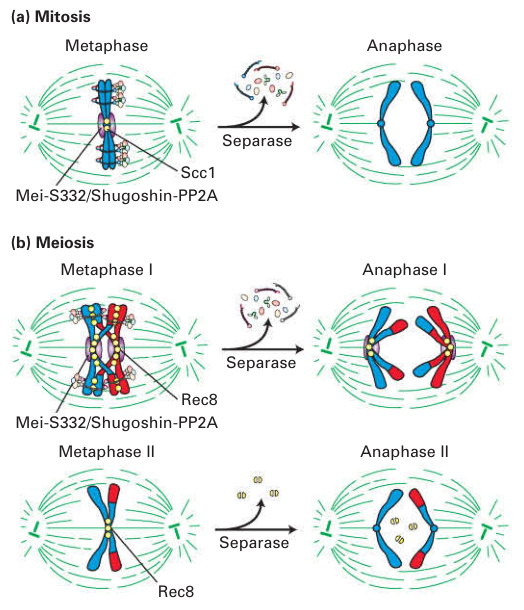
| Separase | 分离酶 |
| Mitosis | 有丝分裂 |
| Meiosis | 减数分裂 |
| Metaphase | 中期 |
| Anaphase | 后期 |
| Metaphase I | 中期I |
| Anaphase I | 后期I |
| Metaphase II | 中期II |
| Anaphase II | 后期II |
在减数分裂后期I开始时，染色体臂之间的黏连蛋白被分离酶切割。这种切割是同源染色体分离所必需的。如果黏连蛋白不从染色体臂上丢失，已重组的姐妹染色单体将在后期I被撕开。在减数分裂I期间维持着丝粒处的黏连，是减数分裂II中姐妹染色单体正确分离所必需的。
在许多生物中的研究表明，一种特化的黏连蛋白亚基Rec8是减数分裂期间黏连蛋白从染色体上分步丢失所必需的。Rec8只在减数分裂期间表达，它与Scc1同源；Scc1是在有丝分裂细胞的黏连蛋白复合体中闭合黏连蛋白环的黏连蛋白亚基（见图19-25）。免疫定位实验显示，在减数分裂I后期早期，Rec8从染色体臂上丢失，但仍保留在着丝粒处。然而，在减数分裂II后期的早期，着丝粒处的Rec8被分离酶切割，因此姐妹染色单体能够分离，就像有丝分裂中一样（见图19-37b，下图）。因此，理解Rec8-黏连蛋白复合体切割的调控，是理解减数分裂I中染色体分离的核心。
在减数分裂I期间保护Rec8在着丝粒处不被切割的机制，与在有丝分裂期间保护着丝粒处Scc1的机制相似。回忆一下，在有丝分裂前期，蛋白激酶（其中最主要的是Polo激酶）磷酸化染色单体臂上的黏连蛋白，使它们解离，从而在中期之前消除染色单体臂上的黏连。然而，着丝粒处的黏连得以维持，这是因为蛋白磷酸酶2A（PP2A）的一种特定同工型被一个称为Mei-S332/Shugoshin的蛋白家族的成员定位到着丝粒染色质上。PP2A使黏连蛋白保持低磷酸化状态，直到减数分裂II才与染色质解离（见图19-37a）。在中期II，Mei-S332/Shugoshin从染色体上解离。此外，当最后一个动粒与纺锤体微管正确结合时，APC/CCdc20被去抑制，导致分离酶抑制蛋白的泛素化。分离酶抑制蛋白的失活释放出分离酶活性，后者切割Scc1，无论它是否被磷酸化，从而消除着丝粒处的黏连，使染色单体在后期得以分离（见图19-37a）。
减数分裂I中黏连蛋白的移除有所不同，因为当Rec8在黏连蛋白复合体中取代Scc1时，该复合体在被磷酸化时不会在前期中解离。减数分裂黏连蛋白复合体只能通过分离酶的作用从染色质上移除。Rec8与Scc1的不同之处还在于，它必须被多种蛋白激酶磷酸化才能被分离酶切割。在减数分裂I期间，由Mei-S332/Shugoshin靶向到着丝粒染色质的着丝粒特异性PP2A同工型阻止了这种磷酸化。到中期II时，PP2A靶向因子和PP2A从染色体上解离，使分离酶得以切割Rec8。
减数分裂I比有丝分裂更容易出错。据估计，人类所有受孕中有10%是非整倍体。这些非整倍性很大程度上是由减数分裂I中的染色体错误分离引起的，也称为染色体不分离。当同源染色体之间未能发生重组，或交叉离染色体末端太近时，动粒-微管附着上施加的张力要么为零，要么太小，这些附着被去稳定，导致不分离。结果是，卵或精子得到的染色体太少或太多。所有单体性（缺失一条染色体）和大多数三体性（多出一条染色体）都会导致胚胎致死或出生后不久死亡。只有21三体，也称为唐氏综合征，能产生可存活的后代，但它会导致发育异常和智力障碍。
减数分裂I中的不分离随母亲年龄的增加而急剧上升。在30岁以下女性所生的婴儿中，患唐氏综合征的不到0.1%，而在45岁时这一比例上升到3.5%。这种染色体不分离随母亲年龄增加的现象并非21号染色体所特有。在临床上确认的妊娠中，三体的发生率在30岁以下女性中不到5%，而在42岁以上女性中高达35%（图19-38）！不分离随母亲年龄增加而急剧上升的原因，在于脊椎动物雌性减数分裂的生物学特性。在所有脊椎动物中，减数分裂前的DNA复制和重组都发生在雌性胚胎中。卵母细胞随后停滞在减数分裂I的G2期，直到雌性达到性成熟；在人类中，这是12至16岁之间。正是在这个时候，第一个卵母细胞进入减数分裂并推进到第二次减数分裂中期，在那里停滞并等待受精（见图19-5）。40岁女性体内进入减数分裂的卵母细胞，已经在G2期停滞了40年；在这段时间里，靠近染色体末端的交叉可能滑脱，或者在这个非常长的G2期里把同源染色体维系在一起的黏连蛋白可能退化，导致同源染色体彼此解离。这两种情况都可能导致同源染色体错误分离，从而形成非整倍体的卵。■
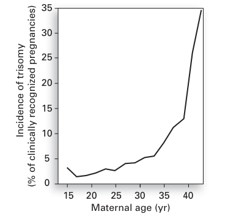
| Maternal age (yr) | 母亲年龄（岁） |
| Incidence of trisomy | 三体发生率 |
| % of clinically recognized pregnancies | 临床确认妊娠的百分比 |
姐妹动粒的同向定向对减数分裂I的染色体分离至关重要
如前所述，在有丝分裂和减数分裂II的中期，姐妹动粒附着到从相反纺锤体极发出的纺锤体微管上；这些动粒被称为是双向定向的。这对姐妹染色单体分离到不同的子细胞至关重要。相反，在减数分裂I中期，姐妹动粒附着到从同一纺锤体极发出的纺锤体微管上；这些姐妹动粒被称为同向定向（见图19-36）。显然，在减数分裂I和II中，姐妹动粒附着到正确的微管上，对于染色体的正确减数分裂分离至关重要。
减数分裂I姐妹动粒同向定向所需的蛋白最初是在酿酒酵母中鉴定出来的。在这种生物中，每条动粒只附着一条微管。我们现在知道，一种称为monopolin复合物的蛋白复合体在减数分裂I期间与姐妹动粒结合，将它们融合成一个单一的动粒单元，一条微管附着于其上。在所有其他生物中，动粒附着到多条微管上。在这些生物中，含有Rec8的黏连蛋白对姐妹动粒同向定向是必需的。这些减数分裂特异性黏连蛋白强加了一种刚性的动粒结构，限制姐妹动粒的运动，从而有利于它们附着到来自同一纺锤体极的微管上。
减数分裂I染色体的正确附着由一种张力机制介导，与有丝分裂和减数分裂II中一样。在减数分裂中期I，动粒相关微管处于张力之下（即使姐妹染色单体的同向定向动粒附着到来自同一纺锤体极的微管上），这是因为同源染色体之间重组产生的交叉以及交叉远端的黏连蛋白阻止它们被拉向两极（见图19-36）。由于在没有张力时动粒-微管附着不稳定（由Aurora B介导的磷酸化所致），附着到来自错误纺锤体的微管上的动粒会释放这些微管，使它们能够再次结合微管，直到形成产生张力的附着。与有丝分裂一样，一旦产生张力，微管与动粒的附着就稳定下来。
两次减数分裂之间DNA复制受到抑制
减数分裂I与II之间DNA复制受到抑制的机制目前是一个活跃的研究领域，但人们认为CDK活性调控的改变至少部分地造成了这种抑制。在有丝分裂之前促进DNA复制的那些S期CDK，也是减数分裂前DNA复制所必需的。而促进有丝分裂的那些有丝分裂CDK，也促进减数分裂，只不过在这种情况下我们把有丝分裂CDK称为减数分裂CDK，因为它们促进的是减数分裂而非有丝分裂。
那么，两次减数分裂之间DNA复制是如何被阻止的呢？在减数分裂I后期之后，减数分裂CDK活性下降的幅度不如有丝分裂后期之后那么低。这种CDK活性的部分下降被认为足以促进减数分裂I纺锤体的解组装，但不足以促进MCM解旋酶的装载（回忆一下，装载MCM解旋酶需要CDK活性极低或没有CDK活性的状态）。在减数分裂II前期，减数分裂CDK活性再次上升，减数分裂II纺锤体形成。在所有姐妹动粒都附着到来自相反纺锤体极的微管上之后，分离酶被激活，细胞依次经过减数分裂II后期、末期和胞质分裂，产生单倍体生殖细胞。
- 减数分裂是一种特化的细胞分裂类型，其中减数分裂特异性基因产物调节有丝分裂的细胞分裂程序（见图19-34）。
- 减数分裂包括一个染色体复制周期，随后是两个细胞分裂周期，从而由二倍体的减数分裂前细胞产生单倍体生殖细胞。在减数分裂I中分离的是同源染色体；在减数分裂II中分离的是姐妹染色单体。
- 特定的环境条件诱导一个导致减数分裂的发育程序。
- 在减数分裂I前期，同源染色体进行重组。每一对同源染色体的染色单体之间至少发生一次重组事件。
- 交叉以及其远端的黏连蛋白负责在减数分裂I前期和中期把同源染色体维系在一起。
- 在减数分裂I后期开始时，染色体臂上的黏连蛋白被磷酸化，并因此被分离酶切割，但着丝粒区域的黏连蛋白受到保护，不被磷酸化和切割。这种保护由一种减数分裂特异性黏连蛋白亚基和一种与着丝粒结合的蛋白磷酸酶实现。结果是，姐妹染色单体在减数分裂I的分离过程中仍彼此连接。
- 减数分裂II后期着丝粒黏连蛋白的切割使单个染色单体得以分离进入生殖细胞。
- 减数分裂黏连蛋白促进姐妹动粒在减数分裂I期间附着到来自同一极的微管上。
- 两次减数分裂之间CDK的不完全失活抑制了DNA复制。
访问LaunchPad可获取学习工具并进一步了解本章内容：展望未来、经典实验19-1"细胞周期蛋白是如何发现的"、经典实验19-2"有丝分裂细胞周期蛋白的合成与降解是细胞进入有丝分裂所必需的"、经典实验19-3"检查点概念的提出"、分析数据，以及包括视频、动画和测验在内的附加学习工具。
关键术语
复习题
- 1.什么细胞机制确保细胞周期的行进是单向且不可逆的？这些机制背后的分子机器是什么？
- 2.研究人员采用哪些类型的实验策略来研究细胞周期进程？遗传学方法与生物化学方法在这一主题上的差异是什么？
- 3.蒂姆·亨特（Tim Hunt）因在卵与胚胎中发现并鉴定细胞周期蛋白的工作，与他人分享了2001年诺贝尔生理学或医学奖（见经典实验19-1）。请描述导致他发现细胞周期蛋白的实验步骤。
- 4.哪些实验证据表明细胞进入有丝分裂需要细胞周期蛋白B？哪些证据表明细胞要退出有丝分裂就必须降解细胞周期蛋白B？
- 5.粟酒裂殖酵母（S. pombe）与酿酒酵母（S. cerevisiae）之间的哪些生理差异，使它们成为研究细胞周期调控与控制所涉分子机制时既有用又互补的工具？
- 6.在非洲爪蟾（Xenopus）中，有丝分裂CDK的底物之一是磷酸酶Cdc25。当被有丝分裂CDK磷酸化后，Cdc25被激活。Cdc25的底物是什么？这一信息如何有助于解释细胞进入有丝分裂时有丝分裂CDK活性的迅速升高？
- 7.请解释下列蛋白如何调节CDK活性：（a）细胞周期蛋白，（b）CAK，（c）Wee1，（d）p21。
- 8.请解释CDK抑制蛋白的作用。如果细胞周期蛋白-CDK复合物是让真核细胞周期得以受调控地推进所必需的，那么CDK抑制蛋白在生理上的意义何在？
- 9.癌细胞通常会失去对进入细胞周期的控制。请解释在某些癌细胞中发现的下列突变如何导致绕过这些控制：（a）细胞周期蛋白D过表达，（b）Rb功能丧失，（c）p16功能丧失，（d）E2F过度活跃。
- 10.人们把Rb蛋白称为细胞周期的"主刹车"。请描述Rb蛋白如何充当细胞周期的刹车。在G1中晚期，刹车是如何被解除从而使细胞能够进入S期的？
- 11.细胞周期调控的一个共同特征是，某一阶段的事件确保向后续阶段的推进。在酿酒酵母（S. cerevisiae）中，G1与G1/S期CDK促进S期的进入。请说出它们促进S期激活的两种方式。
- 12.为使S期能及时完成，真核生物中的DNA复制必须从多个复制起点起始。在酿酒酵母（S. cerevisiae）中，S期CDK与DDK发挥什么作用，以确保整个基因组在每个细胞周期中一次且仅一次地被复制？
- 13.在2001年，诺贝尔生理学或医学奖授予了三位细胞周期科学家。保罗·纳斯（Paul Nurse）因其对裂殖酵母（S. pombe）的研究而受到表彰，特别是对wee1+基因的发现与鉴定。对wee1+基因的鉴定告诉了我们关于细胞周期调控的什么信息？
- 14.请描述细胞如何知道姐妹动粒是否已正确附着到有丝分裂纺锤体上。
- 15.请描述APC/C在后期促进姐妹染色单体分离的一系列事件。
- 16.利兰·哈特韦尔（Leland Hartwell）是2001年诺贝尔生理学或医学奖的第三位得主，他因鉴定芽殖酵母（S. cerevisiae）中的细胞周期检查点通路而受到表彰。什么是细胞周期检查点通路？检查点通路在细胞周期的何时发挥作用？细胞周期检查点通路如何有助于保护基因组？
- 17.包括p53在内的抑癌蛋白，在介导DNA损伤细胞的细胞周期停滞中发挥什么作用？
- 18.患有遗传性疾病共济失调性毛细血管扩张症（ataxia telangiectasia）的个体，会遭受神经退行性变、免疫缺陷以及癌症发生率升高的困扰。共济失调性毛细血管扩张症的遗传基础是编码ATM（ATM；ataxia telangiectasia mutated）的基因发生功能丧失型突变。除p53外，ATM还磷酸化哪种底物？该底物的磷酸化如何导致CDK失活，从而强制执行细胞周期停滞？
- 19.请解释下列蛋白在减数分裂中的特异功能：Ime2、Rec8与monopolin。
- 20.请解释为什么唐氏综合征的发生率随母亲年龄增长而升高。
参考文献
细胞周期及其调控概述
Morgan, D. O. 2006. The Cell Cycle: Principles of Control. New Science Press.
CDK活性的调控
Bloom, J., and F. R. Cross. 2007. Multiple levels of cyclin specificity in cell-cycle control. Nature Rev. Mol. Cell Biol. 8(2):149–160.
Ferrell, J. E. Jr, T. Y. Tsai, and Q. Yang. 2011. Modeling the cell cycle: why do certain circuits oscillate? Cell144(6):874–885.
Lim, S., and P. Kaldis. 2013. CDKs, cyclins and CKIs: roles beyond cell cycle regulation. Development140(15):3079–3093.
细胞周期承诺与DNA复制
Costa, A., I. V. Hood, and J. M. Berger. 2013. Mechanisms for initiating cellular DNA replication. Ann. Rev. Biochem. 82:25–54.
Johnson, A., and J. M. Skotheim. 2013. Start and the restriction point. Curr. Opin. Cell Biol.25(6):717–723.
Wood, A. J., A. F. Severson, and B. J. Meyer. 2010. Conden- sin and cohesin complexity: the expanding repertoire of functions. Nature Rev. Genet. 11(6):391–404.
进入有丝分裂
DeLuca, J. G., and A. Musacchio. 2012. Structural organization of the kinetochore-microtubule interface. Curr. Opin. Cell Biol. 24(1):48–56.
Hirano, T. 2012. Condensins: universal organizers of chromosomes with diverse functions. Genes & Dev.26(15): 1659–1678.
Ohta, S., et al. 2011. Building mitotic chromosomes. Curr. Opin. Cell Biol. 23(1):114–121.
Smoyer, C. J., and S. L. Jaspersen. 2014. Breaking down the wall: the nuclear envelope during mitosis. Curr. Opin. Cell Biol. 26:1–9.
有丝分裂的完成：染色体分离与退出有丝分裂
Craney, A., and M. Rape. 2013. Dynamic regulation of ubiquitin-dependent cell cycle control. Curr. Opin. Cell Biol. 25(6):704–710.
Sullivan, M., and D. O. Morgan. 2007. Finishing mitosis, one step at a time. Nature Rev. Mol. Cell Biol.8(11):894–903.
Wirth, K. G., et al. 2006. Separase: a universal trigger for sister chromatid disjunction but not chromosome cycle progression. J. Cell Biol.172:847–860.
细胞周期调控中的监控机制
Aguilera, A., and T. García-Muse. 2013. Causes of genome instability. Ann. Rev. Genet. 47:1–32.
Burke, D. J. 2009. Interpreting spatial information and regu- lating mitosis in response to spindle orientation. Genes & Dev. 23(14):1613–1618.
Davie, E., and J. Petersen. 2012. Environmental control of cell size at division. Curr. Opin. Cell Biol.24(6):838–844.
Foley, E. A., and T. M. Kapoor. 2013. Microtubule attach- ment and spindle assembly checkpoint signalling at the kinetochore. Nature Rev. Mol. Cell Biol. 14(1):25–37.
Shiloh, Y., and Y. Ziv. 2013. The ATM protein kinase: regulat- ing the cellular response to genotoxic stress, and more. Nature Rev. Mol. Cell Biol.14(4):197–210.
减数分裂：一种特殊的细胞分裂类型
Lesch, B. J., and D. C. Page. 2012. Genetics of germ cell devel- opment. Nature Rev. Genet. 13(11):781–794.
Lichten, M., and B. de Massy. 2011. The impressionistic land- scape of meiotic recombination. Cell147(2):267–270.
Miller, M. P., A. Amon, and E. Ünal. 2013. Meiosis I: when chromosomes undergo extreme makeover. Curr. Opin. Cell Biol. 25(6):687–696.
Zickler, D., and N. Kleckner. 1999. Meiotic chromosomes: inte- grating structure and function. Ann. Rev. Genet.33:603–754.